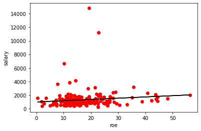

NumPy¶

import numpy as np
dir(np)
['ALLOW_THREADS',
'AxisError',
'BUFSIZE',
'CLIP',
'ComplexWarning',
'DataSource',
'ERR_CALL',
'ERR_DEFAULT',
'ERR_IGNORE',
'ERR_LOG',
'ERR_PRINT',
'ERR_RAISE',
'ERR_WARN',
'FLOATING_POINT_SUPPORT',
'FPE_DIVIDEBYZERO',
'FPE_INVALID',
'FPE_OVERFLOW',
'FPE_UNDERFLOW',
'False_',
'Inf',
'Infinity',
'MAXDIMS',
'MAY_SHARE_BOUNDS',
'MAY_SHARE_EXACT',
'MachAr',
'ModuleDeprecationWarning',
'NAN',
'NINF',
'NZERO',
'NaN',
'PINF',
'PZERO',
'RAISE',
'RankWarning',
'SHIFT_DIVIDEBYZERO',
'SHIFT_INVALID',
'SHIFT_OVERFLOW',
'SHIFT_UNDERFLOW',
'ScalarType',
'Tester',
'TooHardError',
'True_',
'UFUNC_BUFSIZE_DEFAULT',
'UFUNC_PYVALS_NAME',
'VisibleDeprecationWarning',
'WRAP',
'_NoValue',
'_UFUNC_API',
'__NUMPY_SETUP__',
'__all__',
'__builtins__',
'__cached__',
'__config__',
'__dir__',
'__doc__',
'__file__',
'__getattr__',
'__git_revision__',
'__loader__',
'__mkl_version__',
'__name__',
'__package__',
'__path__',
'__spec__',
'__version__',
'_add_newdoc_ufunc',
'_distributor_init',
'_globals',
'_mat',
'_pytesttester',
'abs',
'absolute',
'add',
'add_docstring',
'add_newdoc',
'add_newdoc_ufunc',
'alen',
'all',
'allclose',
'alltrue',
'amax',
'amin',
'angle',
'any',
'append',
'apply_along_axis',
'apply_over_axes',
'arange',
'arccos',
'arccosh',
'arcsin',
'arcsinh',
'arctan',
'arctan2',
'arctanh',
'argmax',
'argmin',
'argpartition',
'argsort',
'argwhere',
'around',
'array',
'array2string',
'array_equal',
'array_equiv',
'array_repr',
'array_split',
'array_str',
'asanyarray',
'asarray',
'asarray_chkfinite',
'ascontiguousarray',
'asfarray',
'asfortranarray',
'asmatrix',
'asscalar',
'atleast_1d',
'atleast_2d',
'atleast_3d',
'average',
'bartlett',
'base_repr',
'binary_repr',
'bincount',
'bitwise_and',
'bitwise_not',
'bitwise_or',
'bitwise_xor',
'blackman',
'block',
'bmat',
'bool',
'bool8',
'bool_',
'broadcast',
'broadcast_arrays',
'broadcast_to',
'busday_count',
'busday_offset',
'busdaycalendar',
'byte',
'byte_bounds',
'bytes0',
'bytes_',
'c_',
'can_cast',
'cast',
'cbrt',
'cdouble',
'ceil',
'cfloat',
'char',
'character',
'chararray',
'choose',
'clip',
'clongdouble',
'clongfloat',
'column_stack',
'common_type',
'compare_chararrays',
'compat',
'complex',
'complex128',
'complex256',
'complex64',
'complex_',
'complexfloating',
'compress',
'concatenate',
'conj',
'conjugate',
'convolve',
'copy',
'copysign',
'copyto',
'core',
'corrcoef',
'correlate',
'cos',
'cosh',
'count_nonzero',
'cov',
'cross',
'csingle',
'ctypeslib',
'cumprod',
'cumproduct',
'cumsum',
'datetime64',
'datetime_as_string',
'datetime_data',
'deg2rad',
'degrees',
'delete',
'deprecate',
'deprecate_with_doc',
'diag',
'diag_indices',
'diag_indices_from',
'diagflat',
'diagonal',
'diff',
'digitize',
'disp',
'divide',
'divmod',
'dot',
'double',
'dsplit',
'dstack',
'dtype',
'e',
'ediff1d',
'einsum',
'einsum_path',
'emath',
'empty',
'empty_like',
'equal',
'error_message',
'errstate',
'euler_gamma',
'exp',
'exp2',
'expand_dims',
'expm1',
'extract',
'eye',
'fabs',
'fastCopyAndTranspose',
'fft',
'fill_diagonal',
'find_common_type',
'finfo',
'fix',
'flatiter',
'flatnonzero',
'flexible',
'flip',
'fliplr',
'flipud',
'float',
'float128',
'float16',
'float32',
'float64',
'float_',
'float_power',
'floating',
'floor',
'floor_divide',
'fmax',
'fmin',
'fmod',
'format_float_positional',
'format_float_scientific',
'format_parser',
'frexp',
'frombuffer',
'fromfile',
'fromfunction',
'fromiter',
'frompyfunc',
'fromregex',
'fromstring',
'full',
'full_like',
'fv',
'gcd',
'generic',
'genfromtxt',
'geomspace',
'get_array_wrap',
'get_include',
'get_printoptions',
'getbufsize',
'geterr',
'geterrcall',
'geterrobj',
'gradient',
'greater',
'greater_equal',
'half',
'hamming',
'hanning',
'heaviside',
'histogram',
'histogram2d',
'histogram_bin_edges',
'histogramdd',
'hsplit',
'hstack',
'hypot',
'i0',
'identity',
'iinfo',
'imag',
'in1d',
'index_exp',
'indices',
'inexact',
'inf',
'info',
'infty',
'inner',
'insert',
'int',
'int0',
'int16',
'int32',
'int64',
'int8',
'int_',
'intc',
'integer',
'interp',
'intersect1d',
'intp',
'invert',
'ipmt',
'irr',
'is_busday',
'isclose',
'iscomplex',
'iscomplexobj',
'isfinite',
'isfortran',
'isin',
'isinf',
'isnan',
'isnat',
'isneginf',
'isposinf',
'isreal',
'isrealobj',
'isscalar',
'issctype',
'issubclass_',
'issubdtype',
'issubsctype',
'iterable',
'ix_',
'kaiser',
'kron',
'lcm',
'ldexp',
'left_shift',
'less',
'less_equal',
'lexsort',
'lib',
'linalg',
'linspace',
'little_endian',
'load',
'loads',
'loadtxt',
'log',
'log10',
'log1p',
'log2',
'logaddexp',
'logaddexp2',
'logical_and',
'logical_not',
'logical_or',
'logical_xor',
'logspace',
'long',
'longcomplex',
'longdouble',
'longfloat',
'longlong',
'lookfor',
'ma',
'mafromtxt',
'mask_indices',
'mat',
'math',
'matmul',
'matrix',
'matrixlib',
'max',
'maximum',
'maximum_sctype',
'may_share_memory',
'mean',
'median',
'memmap',
'meshgrid',
'mgrid',
'min',
'min_scalar_type',
'minimum',
'mintypecode',
'mirr',
'mkl',
'mod',
'modf',
'moveaxis',
'msort',
'multiply',
'nan',
'nan_to_num',
'nanargmax',
'nanargmin',
'nancumprod',
'nancumsum',
'nanmax',
'nanmean',
'nanmedian',
'nanmin',
'nanpercentile',
'nanprod',
'nanquantile',
'nanstd',
'nansum',
'nanvar',
'nbytes',
'ndarray',
'ndenumerate',
'ndfromtxt',
'ndim',
'ndindex',
'nditer',
'negative',
'nested_iters',
'newaxis',
'nextafter',
'nonzero',
'not_equal',
'nper',
'npv',
'numarray',
'number',
'obj2sctype',
'object',
'object0',
'object_',
'ogrid',
'oldnumeric',
'ones',
'ones_like',
'os',
'outer',
'packbits',
'pad',
'partition',
'percentile',
'pi',
'piecewise',
'place',
'pmt',
'poly',
'poly1d',
'polyadd',
'polyder',
'polydiv',
'polyfit',
'polyint',
'polymul',
'polynomial',
'polysub',
'polyval',
'positive',
'power',
'ppmt',
'printoptions',
'prod',
'product',
'promote_types',
'ptp',
'put',
'put_along_axis',
'putmask',
'pv',
'quantile',
'r_',
'rad2deg',
'radians',
'random',
'rate',
'ravel',
'ravel_multi_index',
'real',
'real_if_close',
'rec',
'recarray',
'recfromcsv',
'recfromtxt',
'reciprocal',
'record',
'remainder',
'repeat',
'require',
'reshape',
'resize',
'result_type',
'right_shift',
'rint',
'roll',
'rollaxis',
'roots',
'rot90',
'round',
'round_',
'row_stack',
's_',
'safe_eval',
'save',
'savetxt',
'savez',
'savez_compressed',
'sctype2char',
'sctypeDict',
'sctypeNA',
'sctypes',
'searchsorted',
'select',
'set_numeric_ops',
'set_printoptions',
'set_string_function',
'setbufsize',
'setdiff1d',
'seterr',
'seterrcall',
'seterrobj',
'setxor1d',
'shape',
'shares_memory',
'short',
'show_config',
'sign',
'signbit',
'signedinteger',
'sin',
'sinc',
'single',
'singlecomplex',
'sinh',
'size',
'sometrue',
'sort',
'sort_complex',
'source',
'spacing',
'split',
'sqrt',
'square',
'squeeze',
'stack',
'std',
'str',
'str0',
'str_',
'string_',
'subtract',
'sum',
'swapaxes',
'sys',
'take',
'take_along_axis',
'tan',
'tanh',
'tensordot',
'test',
'testing',
'tile',
'timedelta64',
'trace',
'tracemalloc_domain',
'transpose',
'trapz',
'tri',
'tril',
'tril_indices',
'tril_indices_from',
'trim_zeros',
'triu',
'triu_indices',
'triu_indices_from',
'true_divide',
'trunc',
'typeDict',
'typeNA',
'typecodes',
'typename',
'ubyte',
'ufunc',
'uint',
'uint0',
'uint16',
'uint32',
'uint64',
'uint8',
'uintc',
'uintp',
'ulonglong',
'unicode',
'unicode_',
'union1d',
'unique',
'unpackbits',
'unravel_index',
'unsignedinteger',
'unwrap',
'use_hugepage',
'ushort',
'vander',
'var',
'vdot',
'vectorize',
'version',
'void',
'void0',
'vsplit',
'vstack',
'w',
'warnings',
'where',
'who',
'zeros',
'zeros_like']
help(np.linalg)
Help on package numpy.linalg in numpy:
NAME
numpy.linalg
DESCRIPTION
``numpy.linalg``
================
The NumPy linear algebra functions rely on BLAS and LAPACK to provide efficient
low level implementations of standard linear algebra algorithms. Those
libraries may be provided by NumPy itself using C versions of a subset of their
reference implementations but, when possible, highly optimized libraries that
take advantage of specialized processor functionality are preferred. Examples
of such libraries are OpenBLAS, MKL (TM), and ATLAS. Because those libraries
are multithreaded and processor dependent, environmental variables and external
packages such as threadpoolctl may be needed to control the number of threads
or specify the processor architecture.
- OpenBLAS: https://www.openblas.net/
- threadpoolctl: https://github.com/joblib/threadpoolctl
Please note that the most-used linear algebra functions in NumPy are present in
the main ``numpy`` namespace rather than in ``numpy.linalg``. There are:
``dot``, ``vdot``, ``inner``, ``outer``, ``matmul``, ``tensordot``, ``einsum``,
``einsum_path`` and ``kron``.
Functions present in numpy.linalg are listed below.
Matrix and vector products
--------------------------
multi_dot
matrix_power
Decompositions
--------------
cholesky
qr
svd
Matrix eigenvalues
------------------
eig
eigh
eigvals
eigvalsh
Norms and other numbers
-----------------------
norm
cond
det
matrix_rank
slogdet
Solving equations and inverting matrices
----------------------------------------
solve
tensorsolve
lstsq
inv
pinv
tensorinv
Exceptions
----------
LinAlgError
PACKAGE CONTENTS
_umath_linalg
lapack_lite
linalg
setup
tests (package)
CLASSES
builtins.Exception(builtins.BaseException)
LinAlgError
class LinAlgError(builtins.Exception)
| Generic Python-exception-derived object raised by linalg functions.
|
| General purpose exception class, derived from Python's exception.Exception
| class, programmatically raised in linalg functions when a Linear
| Algebra-related condition would prevent further correct execution of the
| function.
|
| Parameters
| ----------
| None
|
| Examples
| --------
| >>> from numpy import linalg as LA
| >>> LA.inv(np.zeros((2,2)))
| Traceback (most recent call last):
| File "<stdin>", line 1, in <module>
| File "...linalg.py", line 350,
| in inv return wrap(solve(a, identity(a.shape[0], dtype=a.dtype)))
| File "...linalg.py", line 249,
| in solve
| raise LinAlgError('Singular matrix')
| numpy.linalg.LinAlgError: Singular matrix
|
| Method resolution order:
| LinAlgError
| builtins.Exception
| builtins.BaseException
| builtins.object
|
| Data descriptors defined here:
|
| __weakref__
| list of weak references to the object (if defined)
|
| ----------------------------------------------------------------------
| Methods inherited from builtins.Exception:
|
| __init__(self, /, *args, **kwargs)
| Initialize self. See help(type(self)) for accurate signature.
|
| ----------------------------------------------------------------------
| Static methods inherited from builtins.Exception:
|
| __new__(*args, **kwargs) from builtins.type
| Create and return a new object. See help(type) for accurate signature.
|
| ----------------------------------------------------------------------
| Methods inherited from builtins.BaseException:
|
| __delattr__(self, name, /)
| Implement delattr(self, name).
|
| __getattribute__(self, name, /)
| Return getattr(self, name).
|
| __reduce__(...)
| Helper for pickle.
|
| __repr__(self, /)
| Return repr(self).
|
| __setattr__(self, name, value, /)
| Implement setattr(self, name, value).
|
| __setstate__(...)
|
| __str__(self, /)
| Return str(self).
|
| with_traceback(...)
| Exception.with_traceback(tb) --
| set self.__traceback__ to tb and return self.
|
| ----------------------------------------------------------------------
| Data descriptors inherited from builtins.BaseException:
|
| __cause__
| exception cause
|
| __context__
| exception context
|
| __dict__
|
| __suppress_context__
|
| __traceback__
|
| args
FUNCTIONS
cholesky(a)
Cholesky decomposition.
Return the Cholesky decomposition, `L * L.H`, of the square matrix `a`,
where `L` is lower-triangular and .H is the conjugate transpose operator
(which is the ordinary transpose if `a` is real-valued). `a` must be
Hermitian (symmetric if real-valued) and positive-definite. No
checking is performed to verify whether `a` is Hermitian or not.
In addition, only the lower-triangular and diagonal elements of `a`
are used. Only `L` is actually returned.
Parameters
----------
a : (..., M, M) array_like
Hermitian (symmetric if all elements are real), positive-definite
input matrix.
Returns
-------
L : (..., M, M) array_like
Upper or lower-triangular Cholesky factor of `a`. Returns a
matrix object if `a` is a matrix object.
Raises
------
LinAlgError
If the decomposition fails, for example, if `a` is not
positive-definite.
See Also
--------
scipy.linalg.cholesky : Similar function in SciPy.
scipy.linalg.cholesky_banded : Cholesky decompose a banded Hermitian
positive-definite matrix.
scipy.linalg.cho_factor : Cholesky decomposition of a matrix, to use in
`scipy.linalg.cho_solve`.
Notes
-----
.. versionadded:: 1.8.0
Broadcasting rules apply, see the `numpy.linalg` documentation for
details.
The Cholesky decomposition is often used as a fast way of solving
.. math:: A \mathbf{x} = \mathbf{b}
(when `A` is both Hermitian/symmetric and positive-definite).
First, we solve for :math:`\mathbf{y}` in
.. math:: L \mathbf{y} = \mathbf{b},
and then for :math:`\mathbf{x}` in
.. math:: L.H \mathbf{x} = \mathbf{y}.
Examples
--------
>>> A = np.array([[1,-2j],[2j,5]])
>>> A
array([[ 1.+0.j, -0.-2.j],
[ 0.+2.j, 5.+0.j]])
>>> L = np.linalg.cholesky(A)
>>> L
array([[1.+0.j, 0.+0.j],
[0.+2.j, 1.+0.j]])
>>> np.dot(L, L.T.conj()) # verify that L * L.H = A
array([[1.+0.j, 0.-2.j],
[0.+2.j, 5.+0.j]])
>>> A = [[1,-2j],[2j,5]] # what happens if A is only array_like?
>>> np.linalg.cholesky(A) # an ndarray object is returned
array([[1.+0.j, 0.+0.j],
[0.+2.j, 1.+0.j]])
>>> # But a matrix object is returned if A is a matrix object
>>> np.linalg.cholesky(np.matrix(A))
matrix([[ 1.+0.j, 0.+0.j],
[ 0.+2.j, 1.+0.j]])
cond(x, p=None)
Compute the condition number of a matrix.
This function is capable of returning the condition number using
one of seven different norms, depending on the value of `p` (see
Parameters below).
Parameters
----------
x : (..., M, N) array_like
The matrix whose condition number is sought.
p : {None, 1, -1, 2, -2, inf, -inf, 'fro'}, optional
Order of the norm:
===== ============================
p norm for matrices
===== ============================
None 2-norm, computed directly using the ``SVD``
'fro' Frobenius norm
inf max(sum(abs(x), axis=1))
-inf min(sum(abs(x), axis=1))
1 max(sum(abs(x), axis=0))
-1 min(sum(abs(x), axis=0))
2 2-norm (largest sing. value)
-2 smallest singular value
===== ============================
inf means the numpy.inf object, and the Frobenius norm is
the root-of-sum-of-squares norm.
Returns
-------
c : {float, inf}
The condition number of the matrix. May be infinite.
See Also
--------
numpy.linalg.norm
Notes
-----
The condition number of `x` is defined as the norm of `x` times the
norm of the inverse of `x` [1]_; the norm can be the usual L2-norm
(root-of-sum-of-squares) or one of a number of other matrix norms.
References
----------
.. [1] G. Strang, *Linear Algebra and Its Applications*, Orlando, FL,
Academic Press, Inc., 1980, pg. 285.
Examples
--------
>>> from numpy import linalg as LA
>>> a = np.array([[1, 0, -1], [0, 1, 0], [1, 0, 1]])
>>> a
array([[ 1, 0, -1],
[ 0, 1, 0],
[ 1, 0, 1]])
>>> LA.cond(a)
1.4142135623730951
>>> LA.cond(a, 'fro')
3.1622776601683795
>>> LA.cond(a, np.inf)
2.0
>>> LA.cond(a, -np.inf)
1.0
>>> LA.cond(a, 1)
2.0
>>> LA.cond(a, -1)
1.0
>>> LA.cond(a, 2)
1.4142135623730951
>>> LA.cond(a, -2)
0.70710678118654746 # may vary
>>> min(LA.svd(a, compute_uv=False))*min(LA.svd(LA.inv(a), compute_uv=False))
0.70710678118654746 # may vary
det(a)
Compute the determinant of an array.
Parameters
----------
a : (..., M, M) array_like
Input array to compute determinants for.
Returns
-------
det : (...) array_like
Determinant of `a`.
See Also
--------
slogdet : Another way to represent the determinant, more suitable
for large matrices where underflow/overflow may occur.
scipy.linalg.det : Similar function in SciPy.
Notes
-----
.. versionadded:: 1.8.0
Broadcasting rules apply, see the `numpy.linalg` documentation for
details.
The determinant is computed via LU factorization using the LAPACK
routine ``z/dgetrf``.
Examples
--------
The determinant of a 2-D array [[a, b], [c, d]] is ad - bc:
>>> a = np.array([[1, 2], [3, 4]])
>>> np.linalg.det(a)
-2.0 # may vary
Computing determinants for a stack of matrices:
>>> a = np.array([ [[1, 2], [3, 4]], [[1, 2], [2, 1]], [[1, 3], [3, 1]] ])
>>> a.shape
(3, 2, 2)
>>> np.linalg.det(a)
array([-2., -3., -8.])
eig(a)
Compute the eigenvalues and right eigenvectors of a square array.
Parameters
----------
a : (..., M, M) array
Matrices for which the eigenvalues and right eigenvectors will
be computed
Returns
-------
w : (..., M) array
The eigenvalues, each repeated according to its multiplicity.
The eigenvalues are not necessarily ordered. The resulting
array will be of complex type, unless the imaginary part is
zero in which case it will be cast to a real type. When `a`
is real the resulting eigenvalues will be real (0 imaginary
part) or occur in conjugate pairs
v : (..., M, M) array
The normalized (unit "length") eigenvectors, such that the
column ``v[:,i]`` is the eigenvector corresponding to the
eigenvalue ``w[i]``.
Raises
------
LinAlgError
If the eigenvalue computation does not converge.
See Also
--------
eigvals : eigenvalues of a non-symmetric array.
eigh : eigenvalues and eigenvectors of a real symmetric or complex
Hermitian (conjugate symmetric) array.
eigvalsh : eigenvalues of a real symmetric or complex Hermitian
(conjugate symmetric) array.
scipy.linalg.eig : Similar function in SciPy that also solves the
generalized eigenvalue problem.
scipy.linalg.schur : Best choice for unitary and other non-Hermitian
normal matrices.
Notes
-----
.. versionadded:: 1.8.0
Broadcasting rules apply, see the `numpy.linalg` documentation for
details.
This is implemented using the ``_geev`` LAPACK routines which compute
the eigenvalues and eigenvectors of general square arrays.
The number `w` is an eigenvalue of `a` if there exists a vector
`v` such that ``a @ v = w * v``. Thus, the arrays `a`, `w`, and
`v` satisfy the equations ``a @ v[:,i] = w[i] * v[:,i]``
for :math:`i \in \{0,...,M-1\}`.
The array `v` of eigenvectors may not be of maximum rank, that is, some
of the columns may be linearly dependent, although round-off error may
obscure that fact. If the eigenvalues are all different, then theoretically
the eigenvectors are linearly independent and `a` can be diagonalized by
a similarity transformation using `v`, i.e, ``inv(v) @ a @ v`` is diagonal.
For non-Hermitian normal matrices the SciPy function `scipy.linalg.schur`
is preferred because the matrix `v` is guaranteed to be unitary, which is
not the case when using `eig`. The Schur factorization produces an
upper triangular matrix rather than a diagonal matrix, but for normal
matrices only the diagonal of the upper triangular matrix is needed, the
rest is roundoff error.
Finally, it is emphasized that `v` consists of the *right* (as in
right-hand side) eigenvectors of `a`. A vector `y` satisfying
``y.T @ a = z * y.T`` for some number `z` is called a *left*
eigenvector of `a`, and, in general, the left and right eigenvectors
of a matrix are not necessarily the (perhaps conjugate) transposes
of each other.
References
----------
G. Strang, *Linear Algebra and Its Applications*, 2nd Ed., Orlando, FL,
Academic Press, Inc., 1980, Various pp.
Examples
--------
>>> from numpy import linalg as LA
(Almost) trivial example with real e-values and e-vectors.
>>> w, v = LA.eig(np.diag((1, 2, 3)))
>>> w; v
array([1., 2., 3.])
array([[1., 0., 0.],
[0., 1., 0.],
[0., 0., 1.]])
Real matrix possessing complex e-values and e-vectors; note that the
e-values are complex conjugates of each other.
>>> w, v = LA.eig(np.array([[1, -1], [1, 1]]))
>>> w; v
array([1.+1.j, 1.-1.j])
array([[0.70710678+0.j , 0.70710678-0.j ],
[0. -0.70710678j, 0. +0.70710678j]])
Complex-valued matrix with real e-values (but complex-valued e-vectors);
note that ``a.conj().T == a``, i.e., `a` is Hermitian.
>>> a = np.array([[1, 1j], [-1j, 1]])
>>> w, v = LA.eig(a)
>>> w; v
array([2.+0.j, 0.+0.j])
array([[ 0. +0.70710678j, 0.70710678+0.j ], # may vary
[ 0.70710678+0.j , -0. +0.70710678j]])
Be careful about round-off error!
>>> a = np.array([[1 + 1e-9, 0], [0, 1 - 1e-9]])
>>> # Theor. e-values are 1 +/- 1e-9
>>> w, v = LA.eig(a)
>>> w; v
array([1., 1.])
array([[1., 0.],
[0., 1.]])
eigh(a, UPLO='L')
Return the eigenvalues and eigenvectors of a complex Hermitian
(conjugate symmetric) or a real symmetric matrix.
Returns two objects, a 1-D array containing the eigenvalues of `a`, and
a 2-D square array or matrix (depending on the input type) of the
corresponding eigenvectors (in columns).
Parameters
----------
a : (..., M, M) array
Hermitian or real symmetric matrices whose eigenvalues and
eigenvectors are to be computed.
UPLO : {'L', 'U'}, optional
Specifies whether the calculation is done with the lower triangular
part of `a` ('L', default) or the upper triangular part ('U').
Irrespective of this value only the real parts of the diagonal will
be considered in the computation to preserve the notion of a Hermitian
matrix. It therefore follows that the imaginary part of the diagonal
will always be treated as zero.
Returns
-------
w : (..., M) ndarray
The eigenvalues in ascending order, each repeated according to
its multiplicity.
v : {(..., M, M) ndarray, (..., M, M) matrix}
The column ``v[:, i]`` is the normalized eigenvector corresponding
to the eigenvalue ``w[i]``. Will return a matrix object if `a` is
a matrix object.
Raises
------
LinAlgError
If the eigenvalue computation does not converge.
See Also
--------
eigvalsh : eigenvalues of real symmetric or complex Hermitian
(conjugate symmetric) arrays.
eig : eigenvalues and right eigenvectors for non-symmetric arrays.
eigvals : eigenvalues of non-symmetric arrays.
scipy.linalg.eigh : Similar function in SciPy (but also solves the
generalized eigenvalue problem).
Notes
-----
.. versionadded:: 1.8.0
Broadcasting rules apply, see the `numpy.linalg` documentation for
details.
The eigenvalues/eigenvectors are computed using LAPACK routines ``_syevd``,
``_heevd``.
The eigenvalues of real symmetric or complex Hermitian matrices are
always real. [1]_ The array `v` of (column) eigenvectors is unitary
and `a`, `w`, and `v` satisfy the equations
``dot(a, v[:, i]) = w[i] * v[:, i]``.
References
----------
.. [1] G. Strang, *Linear Algebra and Its Applications*, 2nd Ed., Orlando,
FL, Academic Press, Inc., 1980, pg. 222.
Examples
--------
>>> from numpy import linalg as LA
>>> a = np.array([[1, -2j], [2j, 5]])
>>> a
array([[ 1.+0.j, -0.-2.j],
[ 0.+2.j, 5.+0.j]])
>>> w, v = LA.eigh(a)
>>> w; v
array([0.17157288, 5.82842712])
array([[-0.92387953+0.j , -0.38268343+0.j ], # may vary
[ 0. +0.38268343j, 0. -0.92387953j]])
>>> np.dot(a, v[:, 0]) - w[0] * v[:, 0] # verify 1st e-val/vec pair
array([5.55111512e-17+0.0000000e+00j, 0.00000000e+00+1.2490009e-16j])
>>> np.dot(a, v[:, 1]) - w[1] * v[:, 1] # verify 2nd e-val/vec pair
array([0.+0.j, 0.+0.j])
>>> A = np.matrix(a) # what happens if input is a matrix object
>>> A
matrix([[ 1.+0.j, -0.-2.j],
[ 0.+2.j, 5.+0.j]])
>>> w, v = LA.eigh(A)
>>> w; v
array([0.17157288, 5.82842712])
matrix([[-0.92387953+0.j , -0.38268343+0.j ], # may vary
[ 0. +0.38268343j, 0. -0.92387953j]])
>>> # demonstrate the treatment of the imaginary part of the diagonal
>>> a = np.array([[5+2j, 9-2j], [0+2j, 2-1j]])
>>> a
array([[5.+2.j, 9.-2.j],
[0.+2.j, 2.-1.j]])
>>> # with UPLO='L' this is numerically equivalent to using LA.eig() with:
>>> b = np.array([[5.+0.j, 0.-2.j], [0.+2.j, 2.-0.j]])
>>> b
array([[5.+0.j, 0.-2.j],
[0.+2.j, 2.+0.j]])
>>> wa, va = LA.eigh(a)
>>> wb, vb = LA.eig(b)
>>> wa; wb
array([1., 6.])
array([6.+0.j, 1.+0.j])
>>> va; vb
array([[-0.4472136 +0.j , -0.89442719+0.j ], # may vary
[ 0. +0.89442719j, 0. -0.4472136j ]])
array([[ 0.89442719+0.j , -0. +0.4472136j],
[-0. +0.4472136j, 0.89442719+0.j ]])
eigvals(a)
Compute the eigenvalues of a general matrix.
Main difference between `eigvals` and `eig`: the eigenvectors aren't
returned.
Parameters
----------
a : (..., M, M) array_like
A complex- or real-valued matrix whose eigenvalues will be computed.
Returns
-------
w : (..., M,) ndarray
The eigenvalues, each repeated according to its multiplicity.
They are not necessarily ordered, nor are they necessarily
real for real matrices.
Raises
------
LinAlgError
If the eigenvalue computation does not converge.
See Also
--------
eig : eigenvalues and right eigenvectors of general arrays
eigvalsh : eigenvalues of real symmetric or complex Hermitian
(conjugate symmetric) arrays.
eigh : eigenvalues and eigenvectors of real symmetric or complex
Hermitian (conjugate symmetric) arrays.
scipy.linalg.eigvals : Similar function in SciPy.
Notes
-----
.. versionadded:: 1.8.0
Broadcasting rules apply, see the `numpy.linalg` documentation for
details.
This is implemented using the ``_geev`` LAPACK routines which compute
the eigenvalues and eigenvectors of general square arrays.
Examples
--------
Illustration, using the fact that the eigenvalues of a diagonal matrix
are its diagonal elements, that multiplying a matrix on the left
by an orthogonal matrix, `Q`, and on the right by `Q.T` (the transpose
of `Q`), preserves the eigenvalues of the "middle" matrix. In other words,
if `Q` is orthogonal, then ``Q * A * Q.T`` has the same eigenvalues as
``A``:
>>> from numpy import linalg as LA
>>> x = np.random.random()
>>> Q = np.array([[np.cos(x), -np.sin(x)], [np.sin(x), np.cos(x)]])
>>> LA.norm(Q[0, :]), LA.norm(Q[1, :]), np.dot(Q[0, :],Q[1, :])
(1.0, 1.0, 0.0)
Now multiply a diagonal matrix by ``Q`` on one side and by ``Q.T`` on the other:
>>> D = np.diag((-1,1))
>>> LA.eigvals(D)
array([-1., 1.])
>>> A = np.dot(Q, D)
>>> A = np.dot(A, Q.T)
>>> LA.eigvals(A)
array([ 1., -1.]) # random
eigvalsh(a, UPLO='L')
Compute the eigenvalues of a complex Hermitian or real symmetric matrix.
Main difference from eigh: the eigenvectors are not computed.
Parameters
----------
a : (..., M, M) array_like
A complex- or real-valued matrix whose eigenvalues are to be
computed.
UPLO : {'L', 'U'}, optional
Specifies whether the calculation is done with the lower triangular
part of `a` ('L', default) or the upper triangular part ('U').
Irrespective of this value only the real parts of the diagonal will
be considered in the computation to preserve the notion of a Hermitian
matrix. It therefore follows that the imaginary part of the diagonal
will always be treated as zero.
Returns
-------
w : (..., M,) ndarray
The eigenvalues in ascending order, each repeated according to
its multiplicity.
Raises
------
LinAlgError
If the eigenvalue computation does not converge.
See Also
--------
eigh : eigenvalues and eigenvectors of real symmetric or complex Hermitian
(conjugate symmetric) arrays.
eigvals : eigenvalues of general real or complex arrays.
eig : eigenvalues and right eigenvectors of general real or complex
arrays.
scipy.linalg.eigvalsh : Similar function in SciPy.
Notes
-----
.. versionadded:: 1.8.0
Broadcasting rules apply, see the `numpy.linalg` documentation for
details.
The eigenvalues are computed using LAPACK routines ``_syevd``, ``_heevd``.
Examples
--------
>>> from numpy import linalg as LA
>>> a = np.array([[1, -2j], [2j, 5]])
>>> LA.eigvalsh(a)
array([ 0.17157288, 5.82842712]) # may vary
>>> # demonstrate the treatment of the imaginary part of the diagonal
>>> a = np.array([[5+2j, 9-2j], [0+2j, 2-1j]])
>>> a
array([[5.+2.j, 9.-2.j],
[0.+2.j, 2.-1.j]])
>>> # with UPLO='L' this is numerically equivalent to using LA.eigvals()
>>> # with:
>>> b = np.array([[5.+0.j, 0.-2.j], [0.+2.j, 2.-0.j]])
>>> b
array([[5.+0.j, 0.-2.j],
[0.+2.j, 2.+0.j]])
>>> wa = LA.eigvalsh(a)
>>> wb = LA.eigvals(b)
>>> wa; wb
array([1., 6.])
array([6.+0.j, 1.+0.j])
inv(a)
Compute the (multiplicative) inverse of a matrix.
Given a square matrix `a`, return the matrix `ainv` satisfying
``dot(a, ainv) = dot(ainv, a) = eye(a.shape[0])``.
Parameters
----------
a : (..., M, M) array_like
Matrix to be inverted.
Returns
-------
ainv : (..., M, M) ndarray or matrix
(Multiplicative) inverse of the matrix `a`.
Raises
------
LinAlgError
If `a` is not square or inversion fails.
See Also
--------
scipy.linalg.inv : Similar function in SciPy.
Notes
-----
.. versionadded:: 1.8.0
Broadcasting rules apply, see the `numpy.linalg` documentation for
details.
Examples
--------
>>> from numpy.linalg import inv
>>> a = np.array([[1., 2.], [3., 4.]])
>>> ainv = inv(a)
>>> np.allclose(np.dot(a, ainv), np.eye(2))
True
>>> np.allclose(np.dot(ainv, a), np.eye(2))
True
If a is a matrix object, then the return value is a matrix as well:
>>> ainv = inv(np.matrix(a))
>>> ainv
matrix([[-2. , 1. ],
[ 1.5, -0.5]])
Inverses of several matrices can be computed at once:
>>> a = np.array([[[1., 2.], [3., 4.]], [[1, 3], [3, 5]]])
>>> inv(a)
array([[[-2. , 1. ],
[ 1.5 , -0.5 ]],
[[-1.25, 0.75],
[ 0.75, -0.25]]])
lstsq(a, b, rcond='warn')
Return the least-squares solution to a linear matrix equation.
Computes the vector x that approximatively solves the equation
``a @ x = b``. The equation may be under-, well-, or over-determined
(i.e., the number of linearly independent rows of `a` can be less than,
equal to, or greater than its number of linearly independent columns).
If `a` is square and of full rank, then `x` (but for round-off error)
is the "exact" solution of the equation. Else, `x` minimizes the
Euclidean 2-norm :math:`|| b - a x ||`.
Parameters
----------
a : (M, N) array_like
"Coefficient" matrix.
b : {(M,), (M, K)} array_like
Ordinate or "dependent variable" values. If `b` is two-dimensional,
the least-squares solution is calculated for each of the `K` columns
of `b`.
rcond : float, optional
Cut-off ratio for small singular values of `a`.
For the purposes of rank determination, singular values are treated
as zero if they are smaller than `rcond` times the largest singular
value of `a`.
.. versionchanged:: 1.14.0
If not set, a FutureWarning is given. The previous default
of ``-1`` will use the machine precision as `rcond` parameter,
the new default will use the machine precision times `max(M, N)`.
To silence the warning and use the new default, use ``rcond=None``,
to keep using the old behavior, use ``rcond=-1``.
Returns
-------
x : {(N,), (N, K)} ndarray
Least-squares solution. If `b` is two-dimensional,
the solutions are in the `K` columns of `x`.
residuals : {(1,), (K,), (0,)} ndarray
Sums of residuals; squared Euclidean 2-norm for each column in
``b - a*x``.
If the rank of `a` is < N or M <= N, this is an empty array.
If `b` is 1-dimensional, this is a (1,) shape array.
Otherwise the shape is (K,).
rank : int
Rank of matrix `a`.
s : (min(M, N),) ndarray
Singular values of `a`.
Raises
------
LinAlgError
If computation does not converge.
See Also
--------
scipy.linalg.lstsq : Similar function in SciPy.
Notes
-----
If `b` is a matrix, then all array results are returned as matrices.
Examples
--------
Fit a line, ``y = mx + c``, through some noisy data-points:
>>> x = np.array([0, 1, 2, 3])
>>> y = np.array([-1, 0.2, 0.9, 2.1])
By examining the coefficients, we see that the line should have a
gradient of roughly 1 and cut the y-axis at, more or less, -1.
We can rewrite the line equation as ``y = Ap``, where ``A = [[x 1]]``
and ``p = [[m], [c]]``. Now use `lstsq` to solve for `p`:
>>> A = np.vstack([x, np.ones(len(x))]).T
>>> A
array([[ 0., 1.],
[ 1., 1.],
[ 2., 1.],
[ 3., 1.]])
>>> m, c = np.linalg.lstsq(A, y, rcond=None)[0]
>>> m, c
(1.0 -0.95) # may vary
Plot the data along with the fitted line:
>>> import matplotlib.pyplot as plt
>>> _ = plt.plot(x, y, 'o', label='Original data', markersize=10)
>>> _ = plt.plot(x, m*x + c, 'r', label='Fitted line')
>>> _ = plt.legend()
>>> plt.show()
matrix_power(a, n)
Raise a square matrix to the (integer) power `n`.
For positive integers `n`, the power is computed by repeated matrix
squarings and matrix multiplications. If ``n == 0``, the identity matrix
of the same shape as M is returned. If ``n < 0``, the inverse
is computed and then raised to the ``abs(n)``.
.. note:: Stacks of object matrices are not currently supported.
Parameters
----------
a : (..., M, M) array_like
Matrix to be "powered".
n : int
The exponent can be any integer or long integer, positive,
negative, or zero.
Returns
-------
a**n : (..., M, M) ndarray or matrix object
The return value is the same shape and type as `M`;
if the exponent is positive or zero then the type of the
elements is the same as those of `M`. If the exponent is
negative the elements are floating-point.
Raises
------
LinAlgError
For matrices that are not square or that (for negative powers) cannot
be inverted numerically.
Examples
--------
>>> from numpy.linalg import matrix_power
>>> i = np.array([[0, 1], [-1, 0]]) # matrix equiv. of the imaginary unit
>>> matrix_power(i, 3) # should = -i
array([[ 0, -1],
[ 1, 0]])
>>> matrix_power(i, 0)
array([[1, 0],
[0, 1]])
>>> matrix_power(i, -3) # should = 1/(-i) = i, but w/ f.p. elements
array([[ 0., 1.],
[-1., 0.]])
Somewhat more sophisticated example
>>> q = np.zeros((4, 4))
>>> q[0:2, 0:2] = -i
>>> q[2:4, 2:4] = i
>>> q # one of the three quaternion units not equal to 1
array([[ 0., -1., 0., 0.],
[ 1., 0., 0., 0.],
[ 0., 0., 0., 1.],
[ 0., 0., -1., 0.]])
>>> matrix_power(q, 2) # = -np.eye(4)
array([[-1., 0., 0., 0.],
[ 0., -1., 0., 0.],
[ 0., 0., -1., 0.],
[ 0., 0., 0., -1.]])
matrix_rank(M, tol=None, hermitian=False)
Return matrix rank of array using SVD method
Rank of the array is the number of singular values of the array that are
greater than `tol`.
.. versionchanged:: 1.14
Can now operate on stacks of matrices
Parameters
----------
M : {(M,), (..., M, N)} array_like
Input vector or stack of matrices.
tol : (...) array_like, float, optional
Threshold below which SVD values are considered zero. If `tol` is
None, and ``S`` is an array with singular values for `M`, and
``eps`` is the epsilon value for datatype of ``S``, then `tol` is
set to ``S.max() * max(M.shape) * eps``.
.. versionchanged:: 1.14
Broadcasted against the stack of matrices
hermitian : bool, optional
If True, `M` is assumed to be Hermitian (symmetric if real-valued),
enabling a more efficient method for finding singular values.
Defaults to False.
.. versionadded:: 1.14
Returns
-------
rank : (...) array_like
Rank of M.
Notes
-----
The default threshold to detect rank deficiency is a test on the magnitude
of the singular values of `M`. By default, we identify singular values less
than ``S.max() * max(M.shape) * eps`` as indicating rank deficiency (with
the symbols defined above). This is the algorithm MATLAB uses [1]. It also
appears in *Numerical recipes* in the discussion of SVD solutions for linear
least squares [2].
This default threshold is designed to detect rank deficiency accounting for
the numerical errors of the SVD computation. Imagine that there is a column
in `M` that is an exact (in floating point) linear combination of other
columns in `M`. Computing the SVD on `M` will not produce a singular value
exactly equal to 0 in general: any difference of the smallest SVD value from
0 will be caused by numerical imprecision in the calculation of the SVD.
Our threshold for small SVD values takes this numerical imprecision into
account, and the default threshold will detect such numerical rank
deficiency. The threshold may declare a matrix `M` rank deficient even if
the linear combination of some columns of `M` is not exactly equal to
another column of `M` but only numerically very close to another column of
`M`.
We chose our default threshold because it is in wide use. Other thresholds
are possible. For example, elsewhere in the 2007 edition of *Numerical
recipes* there is an alternative threshold of ``S.max() *
np.finfo(M.dtype).eps / 2. * np.sqrt(m + n + 1.)``. The authors describe
this threshold as being based on "expected roundoff error" (p 71).
The thresholds above deal with floating point roundoff error in the
calculation of the SVD. However, you may have more information about the
sources of error in `M` that would make you consider other tolerance values
to detect *effective* rank deficiency. The most useful measure of the
tolerance depends on the operations you intend to use on your matrix. For
example, if your data come from uncertain measurements with uncertainties
greater than floating point epsilon, choosing a tolerance near that
uncertainty may be preferable. The tolerance may be absolute if the
uncertainties are absolute rather than relative.
References
----------
.. [1] MATLAB reference documention, "Rank"
https://www.mathworks.com/help/techdoc/ref/rank.html
.. [2] W. H. Press, S. A. Teukolsky, W. T. Vetterling and B. P. Flannery,
"Numerical Recipes (3rd edition)", Cambridge University Press, 2007,
page 795.
Examples
--------
>>> from numpy.linalg import matrix_rank
>>> matrix_rank(np.eye(4)) # Full rank matrix
4
>>> I=np.eye(4); I[-1,-1] = 0. # rank deficient matrix
>>> matrix_rank(I)
3
>>> matrix_rank(np.ones((4,))) # 1 dimension - rank 1 unless all 0
1
>>> matrix_rank(np.zeros((4,)))
0
multi_dot(arrays, *, out=None)
Compute the dot product of two or more arrays in a single function call,
while automatically selecting the fastest evaluation order.
`multi_dot` chains `numpy.dot` and uses optimal parenthesization
of the matrices [1]_ [2]_. Depending on the shapes of the matrices,
this can speed up the multiplication a lot.
If the first argument is 1-D it is treated as a row vector.
If the last argument is 1-D it is treated as a column vector.
The other arguments must be 2-D.
Think of `multi_dot` as::
def multi_dot(arrays): return functools.reduce(np.dot, arrays)
Parameters
----------
arrays : sequence of array_like
If the first argument is 1-D it is treated as row vector.
If the last argument is 1-D it is treated as column vector.
The other arguments must be 2-D.
out : ndarray, optional
Output argument. This must have the exact kind that would be returned
if it was not used. In particular, it must have the right type, must be
C-contiguous, and its dtype must be the dtype that would be returned
for `dot(a, b)`. This is a performance feature. Therefore, if these
conditions are not met, an exception is raised, instead of attempting
to be flexible.
.. versionadded:: 1.19.0
Returns
-------
output : ndarray
Returns the dot product of the supplied arrays.
See Also
--------
dot : dot multiplication with two arguments.
References
----------
.. [1] Cormen, "Introduction to Algorithms", Chapter 15.2, p. 370-378
.. [2] https://en.wikipedia.org/wiki/Matrix_chain_multiplication
Examples
--------
`multi_dot` allows you to write::
>>> from numpy.linalg import multi_dot
>>> # Prepare some data
>>> A = np.random.random((10000, 100))
>>> B = np.random.random((100, 1000))
>>> C = np.random.random((1000, 5))
>>> D = np.random.random((5, 333))
>>> # the actual dot multiplication
>>> _ = multi_dot([A, B, C, D])
instead of::
>>> _ = np.dot(np.dot(np.dot(A, B), C), D)
>>> # or
>>> _ = A.dot(B).dot(C).dot(D)
Notes
-----
The cost for a matrix multiplication can be calculated with the
following function::
def cost(A, B):
return A.shape[0] * A.shape[1] * B.shape[1]
Assume we have three matrices
:math:`A_{10x100}, B_{100x5}, C_{5x50}`.
The costs for the two different parenthesizations are as follows::
cost((AB)C) = 10*100*5 + 10*5*50 = 5000 + 2500 = 7500
cost(A(BC)) = 10*100*50 + 100*5*50 = 50000 + 25000 = 75000
norm(x, ord=None, axis=None, keepdims=False)
Matrix or vector norm.
This function is able to return one of eight different matrix norms,
or one of an infinite number of vector norms (described below), depending
on the value of the ``ord`` parameter.
Parameters
----------
x : array_like
Input array. If `axis` is None, `x` must be 1-D or 2-D, unless `ord`
is None. If both `axis` and `ord` are None, the 2-norm of
``x.ravel`` will be returned.
ord : {non-zero int, inf, -inf, 'fro', 'nuc'}, optional
Order of the norm (see table under ``Notes``). inf means numpy's
`inf` object. The default is None.
axis : {None, int, 2-tuple of ints}, optional.
If `axis` is an integer, it specifies the axis of `x` along which to
compute the vector norms. If `axis` is a 2-tuple, it specifies the
axes that hold 2-D matrices, and the matrix norms of these matrices
are computed. If `axis` is None then either a vector norm (when `x`
is 1-D) or a matrix norm (when `x` is 2-D) is returned. The default
is None.
.. versionadded:: 1.8.0
keepdims : bool, optional
If this is set to True, the axes which are normed over are left in the
result as dimensions with size one. With this option the result will
broadcast correctly against the original `x`.
.. versionadded:: 1.10.0
Returns
-------
n : float or ndarray
Norm of the matrix or vector(s).
See Also
--------
scipy.linalg.norm : Similar function in SciPy.
Notes
-----
For values of ``ord < 1``, the result is, strictly speaking, not a
mathematical 'norm', but it may still be useful for various numerical
purposes.
The following norms can be calculated:
===== ============================ ==========================
ord norm for matrices norm for vectors
===== ============================ ==========================
None Frobenius norm 2-norm
'fro' Frobenius norm --
'nuc' nuclear norm --
inf max(sum(abs(x), axis=1)) max(abs(x))
-inf min(sum(abs(x), axis=1)) min(abs(x))
0 -- sum(x != 0)
1 max(sum(abs(x), axis=0)) as below
-1 min(sum(abs(x), axis=0)) as below
2 2-norm (largest sing. value) as below
-2 smallest singular value as below
other -- sum(abs(x)**ord)**(1./ord)
===== ============================ ==========================
The Frobenius norm is given by [1]_:
:math:`||A||_F = [\sum_{i,j} abs(a_{i,j})^2]^{1/2}`
The nuclear norm is the sum of the singular values.
Both the Frobenius and nuclear norm orders are only defined for
matrices and raise a ValueError when ``x.ndim != 2``.
References
----------
.. [1] G. H. Golub and C. F. Van Loan, *Matrix Computations*,
Baltimore, MD, Johns Hopkins University Press, 1985, pg. 15
Examples
--------
>>> from numpy import linalg as LA
>>> a = np.arange(9) - 4
>>> a
array([-4, -3, -2, ..., 2, 3, 4])
>>> b = a.reshape((3, 3))
>>> b
array([[-4, -3, -2],
[-1, 0, 1],
[ 2, 3, 4]])
>>> LA.norm(a)
7.745966692414834
>>> LA.norm(b)
7.745966692414834
>>> LA.norm(b, 'fro')
7.745966692414834
>>> LA.norm(a, np.inf)
4.0
>>> LA.norm(b, np.inf)
9.0
>>> LA.norm(a, -np.inf)
0.0
>>> LA.norm(b, -np.inf)
2.0
>>> LA.norm(a, 1)
20.0
>>> LA.norm(b, 1)
7.0
>>> LA.norm(a, -1)
-4.6566128774142013e-010
>>> LA.norm(b, -1)
6.0
>>> LA.norm(a, 2)
7.745966692414834
>>> LA.norm(b, 2)
7.3484692283495345
>>> LA.norm(a, -2)
0.0
>>> LA.norm(b, -2)
1.8570331885190563e-016 # may vary
>>> LA.norm(a, 3)
5.8480354764257312 # may vary
>>> LA.norm(a, -3)
0.0
Using the `axis` argument to compute vector norms:
>>> c = np.array([[ 1, 2, 3],
... [-1, 1, 4]])
>>> LA.norm(c, axis=0)
array([ 1.41421356, 2.23606798, 5. ])
>>> LA.norm(c, axis=1)
array([ 3.74165739, 4.24264069])
>>> LA.norm(c, ord=1, axis=1)
array([ 6., 6.])
Using the `axis` argument to compute matrix norms:
>>> m = np.arange(8).reshape(2,2,2)
>>> LA.norm(m, axis=(1,2))
array([ 3.74165739, 11.22497216])
>>> LA.norm(m[0, :, :]), LA.norm(m[1, :, :])
(3.7416573867739413, 11.224972160321824)
pinv(a, rcond=1e-15, hermitian=False)
Compute the (Moore-Penrose) pseudo-inverse of a matrix.
Calculate the generalized inverse of a matrix using its
singular-value decomposition (SVD) and including all
*large* singular values.
.. versionchanged:: 1.14
Can now operate on stacks of matrices
Parameters
----------
a : (..., M, N) array_like
Matrix or stack of matrices to be pseudo-inverted.
rcond : (...) array_like of float
Cutoff for small singular values.
Singular values less than or equal to
``rcond * largest_singular_value`` are set to zero.
Broadcasts against the stack of matrices.
hermitian : bool, optional
If True, `a` is assumed to be Hermitian (symmetric if real-valued),
enabling a more efficient method for finding singular values.
Defaults to False.
.. versionadded:: 1.17.0
Returns
-------
B : (..., N, M) ndarray
The pseudo-inverse of `a`. If `a` is a `matrix` instance, then so
is `B`.
Raises
------
LinAlgError
If the SVD computation does not converge.
See Also
--------
scipy.linalg.pinv : Similar function in SciPy.
scipy.linalg.pinv2 : Similar function in SciPy (SVD-based).
scipy.linalg.pinvh : Compute the (Moore-Penrose) pseudo-inverse of a
Hermitian matrix.
Notes
-----
The pseudo-inverse of a matrix A, denoted :math:`A^+`, is
defined as: "the matrix that 'solves' [the least-squares problem]
:math:`Ax = b`," i.e., if :math:`\bar{x}` is said solution, then
:math:`A^+` is that matrix such that :math:`\bar{x} = A^+b`.
It can be shown that if :math:`Q_1 \Sigma Q_2^T = A` is the singular
value decomposition of A, then
:math:`A^+ = Q_2 \Sigma^+ Q_1^T`, where :math:`Q_{1,2}` are
orthogonal matrices, :math:`\Sigma` is a diagonal matrix consisting
of A's so-called singular values, (followed, typically, by
zeros), and then :math:`\Sigma^+` is simply the diagonal matrix
consisting of the reciprocals of A's singular values
(again, followed by zeros). [1]_
References
----------
.. [1] G. Strang, *Linear Algebra and Its Applications*, 2nd Ed., Orlando,
FL, Academic Press, Inc., 1980, pp. 139-142.
Examples
--------
The following example checks that ``a * a+ * a == a`` and
``a+ * a * a+ == a+``:
>>> a = np.random.randn(9, 6)
>>> B = np.linalg.pinv(a)
>>> np.allclose(a, np.dot(a, np.dot(B, a)))
True
>>> np.allclose(B, np.dot(B, np.dot(a, B)))
True
qr(a, mode='reduced')
Compute the qr factorization of a matrix.
Factor the matrix `a` as *qr*, where `q` is orthonormal and `r` is
upper-triangular.
Parameters
----------
a : array_like, shape (M, N)
Matrix to be factored.
mode : {'reduced', 'complete', 'r', 'raw'}, optional
If K = min(M, N), then
* 'reduced' : returns q, r with dimensions (M, K), (K, N) (default)
* 'complete' : returns q, r with dimensions (M, M), (M, N)
* 'r' : returns r only with dimensions (K, N)
* 'raw' : returns h, tau with dimensions (N, M), (K,)
The options 'reduced', 'complete, and 'raw' are new in numpy 1.8,
see the notes for more information. The default is 'reduced', and to
maintain backward compatibility with earlier versions of numpy both
it and the old default 'full' can be omitted. Note that array h
returned in 'raw' mode is transposed for calling Fortran. The
'economic' mode is deprecated. The modes 'full' and 'economic' may
be passed using only the first letter for backwards compatibility,
but all others must be spelled out. See the Notes for more
explanation.
Returns
-------
q : ndarray of float or complex, optional
A matrix with orthonormal columns. When mode = 'complete' the
result is an orthogonal/unitary matrix depending on whether or not
a is real/complex. The determinant may be either +/- 1 in that
case.
r : ndarray of float or complex, optional
The upper-triangular matrix.
(h, tau) : ndarrays of np.double or np.cdouble, optional
The array h contains the Householder reflectors that generate q
along with r. The tau array contains scaling factors for the
reflectors. In the deprecated 'economic' mode only h is returned.
Raises
------
LinAlgError
If factoring fails.
See Also
--------
scipy.linalg.qr : Similar function in SciPy.
scipy.linalg.rq : Compute RQ decomposition of a matrix.
Notes
-----
This is an interface to the LAPACK routines ``dgeqrf``, ``zgeqrf``,
``dorgqr``, and ``zungqr``.
For more information on the qr factorization, see for example:
https://en.wikipedia.org/wiki/QR_factorization
Subclasses of `ndarray` are preserved except for the 'raw' mode. So if
`a` is of type `matrix`, all the return values will be matrices too.
New 'reduced', 'complete', and 'raw' options for mode were added in
NumPy 1.8.0 and the old option 'full' was made an alias of 'reduced'. In
addition the options 'full' and 'economic' were deprecated. Because
'full' was the previous default and 'reduced' is the new default,
backward compatibility can be maintained by letting `mode` default.
The 'raw' option was added so that LAPACK routines that can multiply
arrays by q using the Householder reflectors can be used. Note that in
this case the returned arrays are of type np.double or np.cdouble and
the h array is transposed to be FORTRAN compatible. No routines using
the 'raw' return are currently exposed by numpy, but some are available
in lapack_lite and just await the necessary work.
Examples
--------
>>> a = np.random.randn(9, 6)
>>> q, r = np.linalg.qr(a)
>>> np.allclose(a, np.dot(q, r)) # a does equal qr
True
>>> r2 = np.linalg.qr(a, mode='r')
>>> np.allclose(r, r2) # mode='r' returns the same r as mode='full'
True
Example illustrating a common use of `qr`: solving of least squares
problems
What are the least-squares-best `m` and `y0` in ``y = y0 + mx`` for
the following data: {(0,1), (1,0), (1,2), (2,1)}. (Graph the points
and you'll see that it should be y0 = 0, m = 1.) The answer is provided
by solving the over-determined matrix equation ``Ax = b``, where::
A = array([[0, 1], [1, 1], [1, 1], [2, 1]])
x = array([[y0], [m]])
b = array([[1], [0], [2], [1]])
If A = qr such that q is orthonormal (which is always possible via
Gram-Schmidt), then ``x = inv(r) * (q.T) * b``. (In numpy practice,
however, we simply use `lstsq`.)
>>> A = np.array([[0, 1], [1, 1], [1, 1], [2, 1]])
>>> A
array([[0, 1],
[1, 1],
[1, 1],
[2, 1]])
>>> b = np.array([1, 0, 2, 1])
>>> q, r = np.linalg.qr(A)
>>> p = np.dot(q.T, b)
>>> np.dot(np.linalg.inv(r), p)
array([ 1.1e-16, 1.0e+00])
slogdet(a)
Compute the sign and (natural) logarithm of the determinant of an array.
If an array has a very small or very large determinant, then a call to
`det` may overflow or underflow. This routine is more robust against such
issues, because it computes the logarithm of the determinant rather than
the determinant itself.
Parameters
----------
a : (..., M, M) array_like
Input array, has to be a square 2-D array.
Returns
-------
sign : (...) array_like
A number representing the sign of the determinant. For a real matrix,
this is 1, 0, or -1. For a complex matrix, this is a complex number
with absolute value 1 (i.e., it is on the unit circle), or else 0.
logdet : (...) array_like
The natural log of the absolute value of the determinant.
If the determinant is zero, then `sign` will be 0 and `logdet` will be
-Inf. In all cases, the determinant is equal to ``sign * np.exp(logdet)``.
See Also
--------
det
Notes
-----
.. versionadded:: 1.8.0
Broadcasting rules apply, see the `numpy.linalg` documentation for
details.
.. versionadded:: 1.6.0
The determinant is computed via LU factorization using the LAPACK
routine ``z/dgetrf``.
Examples
--------
The determinant of a 2-D array ``[[a, b], [c, d]]`` is ``ad - bc``:
>>> a = np.array([[1, 2], [3, 4]])
>>> (sign, logdet) = np.linalg.slogdet(a)
>>> (sign, logdet)
(-1, 0.69314718055994529) # may vary
>>> sign * np.exp(logdet)
-2.0
Computing log-determinants for a stack of matrices:
>>> a = np.array([ [[1, 2], [3, 4]], [[1, 2], [2, 1]], [[1, 3], [3, 1]] ])
>>> a.shape
(3, 2, 2)
>>> sign, logdet = np.linalg.slogdet(a)
>>> (sign, logdet)
(array([-1., -1., -1.]), array([ 0.69314718, 1.09861229, 2.07944154]))
>>> sign * np.exp(logdet)
array([-2., -3., -8.])
This routine succeeds where ordinary `det` does not:
>>> np.linalg.det(np.eye(500) * 0.1)
0.0
>>> np.linalg.slogdet(np.eye(500) * 0.1)
(1, -1151.2925464970228)
solve(a, b)
Solve a linear matrix equation, or system of linear scalar equations.
Computes the "exact" solution, `x`, of the well-determined, i.e., full
rank, linear matrix equation `ax = b`.
Parameters
----------
a : (..., M, M) array_like
Coefficient matrix.
b : {(..., M,), (..., M, K)}, array_like
Ordinate or "dependent variable" values.
Returns
-------
x : {(..., M,), (..., M, K)} ndarray
Solution to the system a x = b. Returned shape is identical to `b`.
Raises
------
LinAlgError
If `a` is singular or not square.
See Also
--------
scipy.linalg.solve : Similar function in SciPy.
Notes
-----
.. versionadded:: 1.8.0
Broadcasting rules apply, see the `numpy.linalg` documentation for
details.
The solutions are computed using LAPACK routine ``_gesv``.
`a` must be square and of full-rank, i.e., all rows (or, equivalently,
columns) must be linearly independent; if either is not true, use
`lstsq` for the least-squares best "solution" of the
system/equation.
References
----------
.. [1] G. Strang, *Linear Algebra and Its Applications*, 2nd Ed., Orlando,
FL, Academic Press, Inc., 1980, pg. 22.
Examples
--------
Solve the system of equations ``3 * x0 + x1 = 9`` and ``x0 + 2 * x1 = 8``:
>>> a = np.array([[3,1], [1,2]])
>>> b = np.array([9,8])
>>> x = np.linalg.solve(a, b)
>>> x
array([2., 3.])
Check that the solution is correct:
>>> np.allclose(np.dot(a, x), b)
True
svd(a, full_matrices=True, compute_uv=True, hermitian=False)
Singular Value Decomposition.
When `a` is a 2D array, it is factorized as ``u @ np.diag(s) @ vh
= (u * s) @ vh``, where `u` and `vh` are 2D unitary arrays and `s` is a 1D
array of `a`'s singular values. When `a` is higher-dimensional, SVD is
applied in stacked mode as explained below.
Parameters
----------
a : (..., M, N) array_like
A real or complex array with ``a.ndim >= 2``.
full_matrices : bool, optional
If True (default), `u` and `vh` have the shapes ``(..., M, M)`` and
``(..., N, N)``, respectively. Otherwise, the shapes are
``(..., M, K)`` and ``(..., K, N)``, respectively, where
``K = min(M, N)``.
compute_uv : bool, optional
Whether or not to compute `u` and `vh` in addition to `s`. True
by default.
hermitian : bool, optional
If True, `a` is assumed to be Hermitian (symmetric if real-valued),
enabling a more efficient method for finding singular values.
Defaults to False.
.. versionadded:: 1.17.0
Returns
-------
u : { (..., M, M), (..., M, K) } array
Unitary array(s). The first ``a.ndim - 2`` dimensions have the same
size as those of the input `a`. The size of the last two dimensions
depends on the value of `full_matrices`. Only returned when
`compute_uv` is True.
s : (..., K) array
Vector(s) with the singular values, within each vector sorted in
descending order. The first ``a.ndim - 2`` dimensions have the same
size as those of the input `a`.
vh : { (..., N, N), (..., K, N) } array
Unitary array(s). The first ``a.ndim - 2`` dimensions have the same
size as those of the input `a`. The size of the last two dimensions
depends on the value of `full_matrices`. Only returned when
`compute_uv` is True.
Raises
------
LinAlgError
If SVD computation does not converge.
See Also
--------
scipy.linalg.svd : Similar function in SciPy.
scipy.linalg.svdvals : Compute singular values of a matrix.
Notes
-----
.. versionchanged:: 1.8.0
Broadcasting rules apply, see the `numpy.linalg` documentation for
details.
The decomposition is performed using LAPACK routine ``_gesdd``.
SVD is usually described for the factorization of a 2D matrix :math:`A`.
The higher-dimensional case will be discussed below. In the 2D case, SVD is
written as :math:`A = U S V^H`, where :math:`A = a`, :math:`U= u`,
:math:`S= \mathtt{np.diag}(s)` and :math:`V^H = vh`. The 1D array `s`
contains the singular values of `a` and `u` and `vh` are unitary. The rows
of `vh` are the eigenvectors of :math:`A^H A` and the columns of `u` are
the eigenvectors of :math:`A A^H`. In both cases the corresponding
(possibly non-zero) eigenvalues are given by ``s**2``.
If `a` has more than two dimensions, then broadcasting rules apply, as
explained in :ref:`routines.linalg-broadcasting`. This means that SVD is
working in "stacked" mode: it iterates over all indices of the first
``a.ndim - 2`` dimensions and for each combination SVD is applied to the
last two indices. The matrix `a` can be reconstructed from the
decomposition with either ``(u * s[..., None, :]) @ vh`` or
``u @ (s[..., None] * vh)``. (The ``@`` operator can be replaced by the
function ``np.matmul`` for python versions below 3.5.)
If `a` is a ``matrix`` object (as opposed to an ``ndarray``), then so are
all the return values.
Examples
--------
>>> a = np.random.randn(9, 6) + 1j*np.random.randn(9, 6)
>>> b = np.random.randn(2, 7, 8, 3) + 1j*np.random.randn(2, 7, 8, 3)
Reconstruction based on full SVD, 2D case:
>>> u, s, vh = np.linalg.svd(a, full_matrices=True)
>>> u.shape, s.shape, vh.shape
((9, 9), (6,), (6, 6))
>>> np.allclose(a, np.dot(u[:, :6] * s, vh))
True
>>> smat = np.zeros((9, 6), dtype=complex)
>>> smat[:6, :6] = np.diag(s)
>>> np.allclose(a, np.dot(u, np.dot(smat, vh)))
True
Reconstruction based on reduced SVD, 2D case:
>>> u, s, vh = np.linalg.svd(a, full_matrices=False)
>>> u.shape, s.shape, vh.shape
((9, 6), (6,), (6, 6))
>>> np.allclose(a, np.dot(u * s, vh))
True
>>> smat = np.diag(s)
>>> np.allclose(a, np.dot(u, np.dot(smat, vh)))
True
Reconstruction based on full SVD, 4D case:
>>> u, s, vh = np.linalg.svd(b, full_matrices=True)
>>> u.shape, s.shape, vh.shape
((2, 7, 8, 8), (2, 7, 3), (2, 7, 3, 3))
>>> np.allclose(b, np.matmul(u[..., :3] * s[..., None, :], vh))
True
>>> np.allclose(b, np.matmul(u[..., :3], s[..., None] * vh))
True
Reconstruction based on reduced SVD, 4D case:
>>> u, s, vh = np.linalg.svd(b, full_matrices=False)
>>> u.shape, s.shape, vh.shape
((2, 7, 8, 3), (2, 7, 3), (2, 7, 3, 3))
>>> np.allclose(b, np.matmul(u * s[..., None, :], vh))
True
>>> np.allclose(b, np.matmul(u, s[..., None] * vh))
True
tensorinv(a, ind=2)
Compute the 'inverse' of an N-dimensional array.
The result is an inverse for `a` relative to the tensordot operation
``tensordot(a, b, ind)``, i. e., up to floating-point accuracy,
``tensordot(tensorinv(a), a, ind)`` is the "identity" tensor for the
tensordot operation.
Parameters
----------
a : array_like
Tensor to 'invert'. Its shape must be 'square', i. e.,
``prod(a.shape[:ind]) == prod(a.shape[ind:])``.
ind : int, optional
Number of first indices that are involved in the inverse sum.
Must be a positive integer, default is 2.
Returns
-------
b : ndarray
`a`'s tensordot inverse, shape ``a.shape[ind:] + a.shape[:ind]``.
Raises
------
LinAlgError
If `a` is singular or not 'square' (in the above sense).
See Also
--------
numpy.tensordot, tensorsolve
Examples
--------
>>> a = np.eye(4*6)
>>> a.shape = (4, 6, 8, 3)
>>> ainv = np.linalg.tensorinv(a, ind=2)
>>> ainv.shape
(8, 3, 4, 6)
>>> b = np.random.randn(4, 6)
>>> np.allclose(np.tensordot(ainv, b), np.linalg.tensorsolve(a, b))
True
>>> a = np.eye(4*6)
>>> a.shape = (24, 8, 3)
>>> ainv = np.linalg.tensorinv(a, ind=1)
>>> ainv.shape
(8, 3, 24)
>>> b = np.random.randn(24)
>>> np.allclose(np.tensordot(ainv, b, 1), np.linalg.tensorsolve(a, b))
True
tensorsolve(a, b, axes=None)
Solve the tensor equation ``a x = b`` for x.
It is assumed that all indices of `x` are summed over in the product,
together with the rightmost indices of `a`, as is done in, for example,
``tensordot(a, x, axes=b.ndim)``.
Parameters
----------
a : array_like
Coefficient tensor, of shape ``b.shape + Q``. `Q`, a tuple, equals
the shape of that sub-tensor of `a` consisting of the appropriate
number of its rightmost indices, and must be such that
``prod(Q) == prod(b.shape)`` (in which sense `a` is said to be
'square').
b : array_like
Right-hand tensor, which can be of any shape.
axes : tuple of ints, optional
Axes in `a` to reorder to the right, before inversion.
If None (default), no reordering is done.
Returns
-------
x : ndarray, shape Q
Raises
------
LinAlgError
If `a` is singular or not 'square' (in the above sense).
See Also
--------
numpy.tensordot, tensorinv, numpy.einsum
Examples
--------
>>> a = np.eye(2*3*4)
>>> a.shape = (2*3, 4, 2, 3, 4)
>>> b = np.random.randn(2*3, 4)
>>> x = np.linalg.tensorsolve(a, b)
>>> x.shape
(2, 3, 4)
>>> np.allclose(np.tensordot(a, x, axes=3), b)
True
DATA
test = <numpy._pytesttester.PytestTester object>
FILE
/Users/rafamtz/opt/anaconda3/lib/python3.8/site-packages/numpy/linalg/__init__.py
help(np.shape)
Help on function shape in module numpy:
shape(a)
Return the shape of an array.
Parameters
----------
a : array_like
Input array.
Returns
-------
shape : tuple of ints
The elements of the shape tuple give the lengths of the
corresponding array dimensions.
See Also
--------
alen
ndarray.shape : Equivalent array method.
Examples
--------
>>> np.shape(np.eye(3))
(3, 3)
>>> np.shape([[1, 2]])
(1, 2)
>>> np.shape([0])
(1,)
>>> np.shape(0)
()
>>> a = np.array([(1, 2), (3, 4)], dtype=[('x', 'i4'), ('y', 'i4')])
>>> np.shape(a)
(2,)
>>> a.shape
(2,)
a = np.arange(15)
a
array([ 0, 1, 2, 3, 4, 5, 6, 7, 8, 9, 10, 11, 12, 13, 14])
np.shape(a)
(15,)
type(a)
numpy.ndarray
dir(a)
['T',
'__abs__',
'__add__',
'__and__',
'__array__',
'__array_finalize__',
'__array_function__',
'__array_interface__',
'__array_prepare__',
'__array_priority__',
'__array_struct__',
'__array_ufunc__',
'__array_wrap__',
'__bool__',
'__class__',
'__complex__',
'__contains__',
'__copy__',
'__deepcopy__',
'__delattr__',
'__delitem__',
'__dir__',
'__divmod__',
'__doc__',
'__eq__',
'__float__',
'__floordiv__',
'__format__',
'__ge__',
'__getattribute__',
'__getitem__',
'__gt__',
'__hash__',
'__iadd__',
'__iand__',
'__ifloordiv__',
'__ilshift__',
'__imatmul__',
'__imod__',
'__imul__',
'__index__',
'__init__',
'__init_subclass__',
'__int__',
'__invert__',
'__ior__',
'__ipow__',
'__irshift__',
'__isub__',
'__iter__',
'__itruediv__',
'__ixor__',
'__le__',
'__len__',
'__lshift__',
'__lt__',
'__matmul__',
'__mod__',
'__mul__',
'__ne__',
'__neg__',
'__new__',
'__or__',
'__pos__',
'__pow__',
'__radd__',
'__rand__',
'__rdivmod__',
'__reduce__',
'__reduce_ex__',
'__repr__',
'__rfloordiv__',
'__rlshift__',
'__rmatmul__',
'__rmod__',
'__rmul__',
'__ror__',
'__rpow__',
'__rrshift__',
'__rshift__',
'__rsub__',
'__rtruediv__',
'__rxor__',
'__setattr__',
'__setitem__',
'__setstate__',
'__sizeof__',
'__str__',
'__sub__',
'__subclasshook__',
'__truediv__',
'__xor__',
'all',
'any',
'argmax',
'argmin',
'argpartition',
'argsort',
'astype',
'base',
'byteswap',
'choose',
'clip',
'compress',
'conj',
'conjugate',
'copy',
'ctypes',
'cumprod',
'cumsum',
'data',
'diagonal',
'dot',
'dtype',
'dump',
'dumps',
'fill',
'flags',
'flat',
'flatten',
'getfield',
'imag',
'item',
'itemset',
'itemsize',
'max',
'mean',
'min',
'nbytes',
'ndim',
'newbyteorder',
'nonzero',
'partition',
'prod',
'ptp',
'put',
'ravel',
'real',
'repeat',
'reshape',
'resize',
'round',
'searchsorted',
'setfield',
'setflags',
'shape',
'size',
'sort',
'squeeze',
'std',
'strides',
'sum',
'swapaxes',
'take',
'tobytes',
'tofile',
'tolist',
'tostring',
'trace',
'transpose',
'var',
'view']
help(np.ndarray.shape)
Help on getset descriptor numpy.ndarray.shape:
shape
Tuple of array dimensions.
The shape property is usually used to get the current shape of an array,
but may also be used to reshape the array in-place by assigning a tuple of
array dimensions to it. As with `numpy.reshape`, one of the new shape
dimensions can be -1, in which case its value is inferred from the size of
the array and the remaining dimensions. Reshaping an array in-place will
fail if a copy is required.
Examples
--------
>>> x = np.array([1, 2, 3, 4])
>>> x.shape
(4,)
>>> y = np.zeros((2, 3, 4))
>>> y.shape
(2, 3, 4)
>>> y.shape = (3, 8)
>>> y
array([[ 0., 0., 0., 0., 0., 0., 0., 0.],
[ 0., 0., 0., 0., 0., 0., 0., 0.],
[ 0., 0., 0., 0., 0., 0., 0., 0.]])
>>> y.shape = (3, 6)
Traceback (most recent call last):
File "<stdin>", line 1, in <module>
ValueError: total size of new array must be unchanged
>>> np.zeros((4,2))[::2].shape = (-1,)
Traceback (most recent call last):
File "<stdin>", line 1, in <module>
AttributeError: Incompatible shape for in-place modification. Use
`.reshape()` to make a copy with the desired shape.
See Also
--------
numpy.reshape : similar function
ndarray.reshape : similar method
a.shape
(15,)
help(np.ndarray.reshape)
Help on method_descriptor:
reshape(...)
a.reshape(shape, order='C')
Returns an array containing the same data with a new shape.
Refer to `numpy.reshape` for full documentation.
See Also
--------
numpy.reshape : equivalent function
Notes
-----
Unlike the free function `numpy.reshape`, this method on `ndarray` allows
the elements of the shape parameter to be passed in as separate arguments.
For example, ``a.reshape(10, 11)`` is equivalent to
``a.reshape((10, 11))``.
help(a.reshape)
Help on built-in function reshape:
reshape(...) method of numpy.ndarray instance
a.reshape(shape, order='C')
Returns an array containing the same data with a new shape.
Refer to `numpy.reshape` for full documentation.
See Also
--------
numpy.reshape : equivalent function
Notes
-----
Unlike the free function `numpy.reshape`, this method on `ndarray` allows
the elements of the shape parameter to be passed in as separate arguments.
For example, ``a.reshape(10, 11)`` is equivalent to
``a.reshape((10, 11))``.
help(np.reshape)
Help on function reshape in module numpy:
reshape(a, newshape, order='C')
Gives a new shape to an array without changing its data.
Parameters
----------
a : array_like
Array to be reshaped.
newshape : int or tuple of ints
The new shape should be compatible with the original shape. If
an integer, then the result will be a 1-D array of that length.
One shape dimension can be -1. In this case, the value is
inferred from the length of the array and remaining dimensions.
order : {'C', 'F', 'A'}, optional
Read the elements of `a` using this index order, and place the
elements into the reshaped array using this index order. 'C'
means to read / write the elements using C-like index order,
with the last axis index changing fastest, back to the first
axis index changing slowest. 'F' means to read / write the
elements using Fortran-like index order, with the first index
changing fastest, and the last index changing slowest. Note that
the 'C' and 'F' options take no account of the memory layout of
the underlying array, and only refer to the order of indexing.
'A' means to read / write the elements in Fortran-like index
order if `a` is Fortran *contiguous* in memory, C-like order
otherwise.
Returns
-------
reshaped_array : ndarray
This will be a new view object if possible; otherwise, it will
be a copy. Note there is no guarantee of the *memory layout* (C- or
Fortran- contiguous) of the returned array.
See Also
--------
ndarray.reshape : Equivalent method.
Notes
-----
It is not always possible to change the shape of an array without
copying the data. If you want an error to be raised when the data is copied,
you should assign the new shape to the shape attribute of the array::
>>> a = np.zeros((10, 2))
# A transpose makes the array non-contiguous
>>> b = a.T
# Taking a view makes it possible to modify the shape without modifying
# the initial object.
>>> c = b.view()
>>> c.shape = (20)
Traceback (most recent call last):
...
AttributeError: Incompatible shape for in-place modification. Use
`.reshape()` to make a copy with the desired shape.
The `order` keyword gives the index ordering both for *fetching* the values
from `a`, and then *placing* the values into the output array.
For example, let's say you have an array:
>>> a = np.arange(6).reshape((3, 2))
>>> a
array([[0, 1],
[2, 3],
[4, 5]])
You can think of reshaping as first raveling the array (using the given
index order), then inserting the elements from the raveled array into the
new array using the same kind of index ordering as was used for the
raveling.
>>> np.reshape(a, (2, 3)) # C-like index ordering
array([[0, 1, 2],
[3, 4, 5]])
>>> np.reshape(np.ravel(a), (2, 3)) # equivalent to C ravel then C reshape
array([[0, 1, 2],
[3, 4, 5]])
>>> np.reshape(a, (2, 3), order='F') # Fortran-like index ordering
array([[0, 4, 3],
[2, 1, 5]])
>>> np.reshape(np.ravel(a, order='F'), (2, 3), order='F')
array([[0, 4, 3],
[2, 1, 5]])
Examples
--------
>>> a = np.array([[1,2,3], [4,5,6]])
>>> np.reshape(a, 6)
array([1, 2, 3, 4, 5, 6])
>>> np.reshape(a, 6, order='F')
array([1, 4, 2, 5, 3, 6])
>>> np.reshape(a, (3,-1)) # the unspecified value is inferred to be 2
array([[1, 2],
[3, 4],
[5, 6]])
a.reshape((5,3))
array([[ 0, 1, 2],
[ 3, 4, 5],
[ 6, 7, 8],
[ 9, 10, 11],
[12, 13, 14]])
a.reshape((5,3),order='F')
array([[ 0, 5, 10],
[ 1, 6, 11],
[ 2, 7, 12],
[ 3, 8, 13],
[ 4, 9, 14]])
Arreglos¶


a = np.linspace(1,10,3)
a
array([ 1. , 5.5, 10. ])
a.shape
(3,)
b = np.linspace(1,15,15)
print(b)
print(b.shape)
b = b.reshape((3,5))
print(b)
b.shape
[ 1. 2. 3. 4. 5. 6. 7. 8. 9. 10. 11. 12. 13. 14. 15.]
(15,)
[[ 1. 2. 3. 4. 5.]
[ 6. 7. 8. 9. 10.]
[11. 12. 13. 14. 15.]]
(3, 5)
c = np.linspace(1,30,30)
print(c)
print(c.shape)
c = c.reshape((2,3,5))
print(c)
c.shape
[ 1. 2. 3. 4. 5. 6. 7. 8. 9. 10. 11. 12. 13. 14. 15. 16. 17. 18.
19. 20. 21. 22. 23. 24. 25. 26. 27. 28. 29. 30.]
(30,)
[[[ 1. 2. 3. 4. 5.]
[ 6. 7. 8. 9. 10.]
[11. 12. 13. 14. 15.]]
[[16. 17. 18. 19. 20.]
[21. 22. 23. 24. 25.]
[26. 27. 28. 29. 30.]]]
(2, 3, 5)
d = np.ones((2,3,5))
print(d.shape)
d
(2, 3, 5)
array([[[1., 1., 1., 1., 1.],
[1., 1., 1., 1., 1.],
[1., 1., 1., 1., 1.]],
[[1., 1., 1., 1., 1.],
[1., 1., 1., 1., 1.],
[1., 1., 1., 1., 1.]]])

c
array([[[ 1., 2., 3., 4., 5.],
[ 6., 7., 8., 9., 10.],
[11., 12., 13., 14., 15.]],
[[16., 17., 18., 19., 20.],
[21., 22., 23., 24., 25.],
[26., 27., 28., 29., 30.]]])
c[1,1,2]
23.0
e = np.linspace(1,8,8)
e.reshape((2,2,2))
array([[[1., 2.],
[3., 4.]],
[[5., 6.],
[7., 8.]]])
e = np.array([[[1., 2.],[3., 4.]],[[5., 6.],[7., 8.]]])
e
array([[[1., 2.],
[3., 4.]],
[[5., 6.],
[7., 8.]]])
e[0,:,:]*e[1,:,:]
array([[ 5., 12.],
[21., 32.]])
e[0,:,:]@e[1,:,:]
array([[19., 22.],
[43., 50.]])
e[0,:,:].dot(e[1,:,:])
array([[19., 22.],
[43., 50.]])
help(np.linalg.multi_dot)
Help on function multi_dot in module numpy.linalg:
multi_dot(arrays, *, out=None)
Compute the dot product of two or more arrays in a single function call,
while automatically selecting the fastest evaluation order.
`multi_dot` chains `numpy.dot` and uses optimal parenthesization
of the matrices [1]_ [2]_. Depending on the shapes of the matrices,
this can speed up the multiplication a lot.
If the first argument is 1-D it is treated as a row vector.
If the last argument is 1-D it is treated as a column vector.
The other arguments must be 2-D.
Think of `multi_dot` as::
def multi_dot(arrays): return functools.reduce(np.dot, arrays)
Parameters
----------
arrays : sequence of array_like
If the first argument is 1-D it is treated as row vector.
If the last argument is 1-D it is treated as column vector.
The other arguments must be 2-D.
out : ndarray, optional
Output argument. This must have the exact kind that would be returned
if it was not used. In particular, it must have the right type, must be
C-contiguous, and its dtype must be the dtype that would be returned
for `dot(a, b)`. This is a performance feature. Therefore, if these
conditions are not met, an exception is raised, instead of attempting
to be flexible.
.. versionadded:: 1.19.0
Returns
-------
output : ndarray
Returns the dot product of the supplied arrays.
See Also
--------
dot : dot multiplication with two arguments.
References
----------
.. [1] Cormen, "Introduction to Algorithms", Chapter 15.2, p. 370-378
.. [2] https://en.wikipedia.org/wiki/Matrix_chain_multiplication
Examples
--------
`multi_dot` allows you to write::
>>> from numpy.linalg import multi_dot
>>> # Prepare some data
>>> A = np.random.random((10000, 100))
>>> B = np.random.random((100, 1000))
>>> C = np.random.random((1000, 5))
>>> D = np.random.random((5, 333))
>>> # the actual dot multiplication
>>> _ = multi_dot([A, B, C, D])
instead of::
>>> _ = np.dot(np.dot(np.dot(A, B), C), D)
>>> # or
>>> _ = A.dot(B).dot(C).dot(D)
Notes
-----
The cost for a matrix multiplication can be calculated with the
following function::
def cost(A, B):
return A.shape[0] * A.shape[1] * B.shape[1]
Assume we have three matrices
:math:`A_{10x100}, B_{100x5}, C_{5x50}`.
The costs for the two different parenthesizations are as follows::
cost((AB)C) = 10*100*5 + 10*5*50 = 5000 + 2500 = 7500
cost(A(BC)) = 10*100*50 + 100*5*50 = 50000 + 25000 = 75000
np.linalg.multi_dot([e[0,:,:],e[1,:,:]])
array([[19., 22.],
[43., 50.]])
print(a)
print(c[0,:,:])
r = a.dot(c[0,:,:])
print(r)
print(r.shape)
r.ndim
[ 1. 5.5 10. ]
[[ 1. 2. 3. 4. 5.]
[ 6. 7. 8. 9. 10.]
[11. 12. 13. 14. 15.]]
[144. 160.5 177. 193.5 210. ]
(5,)
1
ap = a.reshape((1,3))
print(ap)
ap.shape
rp = ap.dot(c[0,:,:])
print(rp)
print(rp.shape)
rp.ndim
[[ 1. 5.5 10. ]]
[[144. 160.5 177. 193.5 210. ]]
(1, 5)
2
at = a.T
print(at)
at.shape
[ 1. 5.5 10. ]
(3,)
apt = ap.T
print(apt)
apt.shape
[[ 1. ]
[ 5.5]
[10. ]]
(3, 1)
print(at)
r = np.ones((3,3)).dot(at)
print(r)
print(r.shape)
r.ndim
[ 1. 5.5 10. ]
[16.5 16.5 16.5]
(3,)
1
print(apt)
r = np.ones((3,3)).dot(apt)
print(r)
print(r.shape)
r.ndim
[[ 1. ]
[ 5.5]
[10. ]]
[[16.5]
[16.5]
[16.5]]
(3, 1)
2
Ejemplo Econometría¶
Los datos del libro de Wooldridge se encuentran en la siguiente direccción enlace
!pip install wooldridge # solo es necesario instalarlo una vez
Requirement already satisfied: wooldridge in /Users/rafamtz/opt/anaconda3/lib/python3.8/site-packages (0.4.2)
Requirement already satisfied: pandas in /Users/rafamtz/opt/anaconda3/lib/python3.8/site-packages (from wooldridge) (1.1.3)
Requirement already satisfied: pytz>=2017.2 in /Users/rafamtz/opt/anaconda3/lib/python3.8/site-packages (from pandas->wooldridge) (2020.1)
Requirement already satisfied: numpy>=1.15.4 in /Users/rafamtz/opt/anaconda3/lib/python3.8/site-packages (from pandas->wooldridge) (1.19.2)
Requirement already satisfied: python-dateutil>=2.7.3 in /Users/rafamtz/opt/anaconda3/lib/python3.8/site-packages (from pandas->wooldridge) (2.8.1)
Requirement already satisfied: six>=1.5 in /Users/rafamtz/opt/anaconda3/lib/python3.8/site-packages (from python-dateutil>=2.7.3->pandas->wooldridge) (1.15.0)
import wooldridge as woo
dir(woo)
['__all__',
'__author__',
'__builtins__',
'__cached__',
'__copyright__',
'__doc__',
'__file__',
'__license__',
'__loader__',
'__name__',
'__package__',
'__path__',
'__spec__',
'__version__',
'abspath',
'data',
'dataWoo',
'get_path',
'join',
'load_data',
'lst',
'pd',
'split']
woo.__author__
'Tetsu Haruyama'
help(woo.lst) # lista de conjunto de datos
No Python documentation found for 'J.M. Wooldridge (2016) Introductory Econometrics: A Modern Approach,\n Cengage Learning, 6th edition.\n\n 401k 401ksubs admnrev affairs airfare\n alcohol apple approval athlet1 athlet2\n attend audit barium beauty benefits\n beveridge big9salary bwght bwght2 campus\n card catholic cement census2000 ceosal1\n ceosal2 charity consump corn countymurders\n cps78_85 cps91 crime1 crime2 crime3\n crime4 discrim driving earns econmath\n elem94_95 engin expendshares ezanders ezunem\n fair fertil1 fertil2 fertil3 fish\n fringe gpa1 gpa2 gpa3 happiness\n hprice1 hprice2 hprice3 hseinv htv\n infmrt injury intdef intqrt inven\n jtrain jtrain2 jtrain3 kielmc lawsch85\n loanapp lowbrth mathpnl meap00_01 meap01\n meap93 meapsingle minwage mlb1 mroz\n murder nbasal nyse okun openness\n pension phillips pntsprd prison prminwge\n rdchem rdtelec recid rental return\n saving sleep75 slp75_81 smoke traffic1\n traffic2 twoyear volat vote1 vote2\n voucher wage1 wage2 wagepan wageprc\n wine'.
Use help() to get the interactive help utility.
Use help(str) for help on the str class.
Regresión Simple¶
\[y = \beta_0 +\beta_1 x + u\]
\[\hat\beta_0 = \bar{y}-\hat\beta_1 \bar{x}\]
\[\hat\beta_1= \frac{Cov(x,y)}{Var(x)}\]
Wooldridge 2016, ejemplo-2-3¶
ceosal1 = woo.data('ceosal1')
ceosal1
| salary | pcsalary | sales | roe | pcroe | ros | indus | finance | consprod | utility | lsalary | lsales | |
|---|---|---|---|---|---|---|---|---|---|---|---|---|
| 0 | 1095 | 20 | 27595.000000 | 14.1 | 106.400002 | 191 | 1 | 0 | 0 | 0 | 6.998509 | 10.225389 |
| 1 | 1001 | 32 | 9958.000000 | 10.9 | -30.600000 | 13 | 1 | 0 | 0 | 0 | 6.908755 | 9.206132 |
| 2 | 1122 | 9 | 6125.899902 | 23.5 | -16.299999 | 14 | 1 | 0 | 0 | 0 | 7.022868 | 8.720281 |
| 3 | 578 | -9 | 16246.000000 | 5.9 | -25.700001 | -21 | 1 | 0 | 0 | 0 | 6.359574 | 9.695602 |
| 4 | 1368 | 7 | 21783.199219 | 13.8 | -3.000000 | 56 | 1 | 0 | 0 | 0 | 7.221105 | 9.988894 |
| ... | ... | ... | ... | ... | ... | ... | ... | ... | ... | ... | ... | ... |
| 204 | 930 | 10 | 1509.099976 | 9.0 | 20.500000 | 131 | 0 | 0 | 0 | 1 | 6.835185 | 7.319269 |
| 205 | 525 | 3 | 1097.099976 | 15.5 | 20.100000 | 72 | 0 | 0 | 0 | 1 | 6.263398 | 7.000426 |
| 206 | 658 | 32 | 4542.600098 | 12.1 | -7.800000 | 68 | 0 | 0 | 0 | 1 | 6.489205 | 8.421255 |
| 207 | 555 | 6 | 2023.000000 | 13.7 | -14.600000 | 60 | 0 | 0 | 0 | 1 | 6.318968 | 7.612337 |
| 208 | 626 | 0 | 1442.500000 | 14.4 | -10.200000 | 62 | 0 | 0 | 0 | 1 | 6.439351 | 7.274133 |
209 rows × 12 columns
x = ceosal1['roe']
y = ceosal1['salary']
print(type(x),type(y))
<class 'pandas.core.series.Series'> <class 'pandas.core.series.Series'>
cov = np.cov(x,y)
print(cov)
[[7.25649898e+01 1.34253840e+03]
[1.34253840e+03 1.88333164e+06]]
cov_xy = cov[0,1]
cov_xy
1342.5383979609712
var_x = np.var(x)
var_x
72.21778886672104
x_bar = np.mean(x)
y_bar = np.mean(y)
print(x_bar,y_bar)
17.18421050521175 1281.1196172248804
var_x= np.var(x,ddof = 1) # utilizamos la varianza correcta
b1 = cov_xy/var_x
b0 = y_bar - b1 * x_bar
print(b0,b1)
963.1913364725579 18.501186345214922
help(np.var)
Help on function var in module numpy:
var(a, axis=None, dtype=None, out=None, ddof=0, keepdims=<no value>)
Compute the variance along the specified axis.
Returns the variance of the array elements, a measure of the spread of a
distribution. The variance is computed for the flattened array by
default, otherwise over the specified axis.
Parameters
----------
a : array_like
Array containing numbers whose variance is desired. If `a` is not an
array, a conversion is attempted.
axis : None or int or tuple of ints, optional
Axis or axes along which the variance is computed. The default is to
compute the variance of the flattened array.
.. versionadded:: 1.7.0
If this is a tuple of ints, a variance is performed over multiple axes,
instead of a single axis or all the axes as before.
dtype : data-type, optional
Type to use in computing the variance. For arrays of integer type
the default is `float64`; for arrays of float types it is the same as
the array type.
out : ndarray, optional
Alternate output array in which to place the result. It must have
the same shape as the expected output, but the type is cast if
necessary.
ddof : int, optional
"Delta Degrees of Freedom": the divisor used in the calculation is
``N - ddof``, where ``N`` represents the number of elements. By
default `ddof` is zero.
keepdims : bool, optional
If this is set to True, the axes which are reduced are left
in the result as dimensions with size one. With this option,
the result will broadcast correctly against the input array.
If the default value is passed, then `keepdims` will not be
passed through to the `var` method of sub-classes of
`ndarray`, however any non-default value will be. If the
sub-class' method does not implement `keepdims` any
exceptions will be raised.
Returns
-------
variance : ndarray, see dtype parameter above
If ``out=None``, returns a new array containing the variance;
otherwise, a reference to the output array is returned.
See Also
--------
std, mean, nanmean, nanstd, nanvar
ufuncs-output-type
Notes
-----
The variance is the average of the squared deviations from the mean,
i.e., ``var = mean(abs(x - x.mean())**2)``.
The mean is normally calculated as ``x.sum() / N``, where ``N = len(x)``.
If, however, `ddof` is specified, the divisor ``N - ddof`` is used
instead. In standard statistical practice, ``ddof=1`` provides an
unbiased estimator of the variance of a hypothetical infinite population.
``ddof=0`` provides a maximum likelihood estimate of the variance for
normally distributed variables.
Note that for complex numbers, the absolute value is taken before
squaring, so that the result is always real and nonnegative.
For floating-point input, the variance is computed using the same
precision the input has. Depending on the input data, this can cause
the results to be inaccurate, especially for `float32` (see example
below). Specifying a higher-accuracy accumulator using the ``dtype``
keyword can alleviate this issue.
Examples
--------
>>> a = np.array([[1, 2], [3, 4]])
>>> np.var(a)
1.25
>>> np.var(a, axis=0)
array([1., 1.])
>>> np.var(a, axis=1)
array([0.25, 0.25])
In single precision, var() can be inaccurate:
>>> a = np.zeros((2, 512*512), dtype=np.float32)
>>> a[0, :] = 1.0
>>> a[1, :] = 0.1
>>> np.var(a)
0.20250003
Computing the variance in float64 is more accurate:
>>> np.var(a, dtype=np.float64)
0.20249999932944759 # may vary
>>> ((1-0.55)**2 + (0.1-0.55)**2)/2
0.2025
Módulo statsmodels¶
statsmodels es un módulo de Python que proporciona clases y funciones para la estimación de muchos modelos estadísticos diferentes, así como para realizar pruebas estadísticas y exploración de datos estadísticos. Hay disponible una lista extensa de estadísticas de resultados para cada estimador.
Tarea moral: instalar statsmodels con conda
import statsmodels.formula.api as smf # submodulo que permite utilizar las sintaxis de R para regresiones
reg_smf = smf.ols(formula = 'salary ~ roe',
data = ceosal1
)
Lo anterior solo es configuración del estimador, esto es común en algunos módulos de Python, por ejemplo el módulo scikit-learn para Machine Learning, tiene esta misma idea
type(reg_smf)
statsmodels.regression.linear_model.OLS
dir(reg_smf)
['__class__',
'__delattr__',
'__dict__',
'__dir__',
'__doc__',
'__eq__',
'__format__',
'__ge__',
'__getattribute__',
'__gt__',
'__hash__',
'__init__',
'__init_subclass__',
'__le__',
'__lt__',
'__module__',
'__ne__',
'__new__',
'__reduce__',
'__reduce_ex__',
'__repr__',
'__setattr__',
'__sizeof__',
'__str__',
'__subclasshook__',
'__weakref__',
'_data_attr',
'_df_model',
'_df_resid',
'_fit_collinear',
'_fit_ridge',
'_fit_zeros',
'_formula_max_endog',
'_get_init_kwds',
'_handle_data',
'_init_keys',
'_setup_score_hess',
'_sqrt_lasso',
'data',
'df_model',
'df_resid',
'endog',
'endog_names',
'exog',
'exog_names',
'fit',
'fit_regularized',
'formula',
'from_formula',
'get_distribution',
'hessian',
'hessian_factor',
'information',
'initialize',
'k_constant',
'loglike',
'nobs',
'predict',
'rank',
'score',
'weights',
'wendog',
'wexog',
'whiten']
help(reg_smf)
Help on OLS in module statsmodels.regression.linear_model object:
class OLS(WLS)
| OLS(endog, exog=None, missing='none', hasconst=None, **kwargs)
|
| Ordinary Least Squares
|
| Parameters
| ----------
| endog : array_like
| A 1-d endogenous response variable. The dependent variable.
| exog : array_like
| A nobs x k array where `nobs` is the number of observations and `k`
| is the number of regressors. An intercept is not included by default
| and should be added by the user. See
| :func:`statsmodels.tools.add_constant`.
| missing : str
| Available options are 'none', 'drop', and 'raise'. If 'none', no nan
| checking is done. If 'drop', any observations with nans are dropped.
| If 'raise', an error is raised. Default is 'none'.
| hasconst : None or bool
| Indicates whether the RHS includes a user-supplied constant. If True,
| a constant is not checked for and k_constant is set to 1 and all
| result statistics are calculated as if a constant is present. If
| False, a constant is not checked for and k_constant is set to 0.
| **kwargs
| Extra arguments that are used to set model properties when using the
| formula interface.
|
| Attributes
| ----------
| weights : scalar
| Has an attribute weights = array(1.0) due to inheritance from WLS.
|
| See Also
| --------
| WLS : Fit a linear model using Weighted Least Squares.
| GLS : Fit a linear model using Generalized Least Squares.
|
| Notes
| -----
| No constant is added by the model unless you are using formulas.
|
| Examples
| --------
| >>> import statsmodels.api as sm
| >>> import numpy as np
| >>> duncan_prestige = sm.datasets.get_rdataset("Duncan", "carData")
| >>> Y = duncan_prestige.data['income']
| >>> X = duncan_prestige.data['education']
| >>> X = sm.add_constant(X)
| >>> model = sm.OLS(Y,X)
| >>> results = model.fit()
| >>> results.params
| const 10.603498
| education 0.594859
| dtype: float64
|
| >>> results.tvalues
| const 2.039813
| education 6.892802
| dtype: float64
|
| >>> print(results.t_test([1, 0]))
| Test for Constraints
| ==============================================================================
| coef std err t P>|t| [0.025 0.975]
| ------------------------------------------------------------------------------
| c0 10.6035 5.198 2.040 0.048 0.120 21.087
| ==============================================================================
|
| >>> print(results.f_test(np.identity(2)))
| <F test: F=array([[159.63031026]]), p=1.2607168903696672e-20, df_denom=43, df_num=2>
|
| Method resolution order:
| OLS
| WLS
| RegressionModel
| statsmodels.base.model.LikelihoodModel
| statsmodels.base.model.Model
| builtins.object
|
| Methods defined here:
|
| __init__(self, endog, exog=None, missing='none', hasconst=None, **kwargs)
| Initialize self. See help(type(self)) for accurate signature.
|
| fit_regularized(self, method='elastic_net', alpha=0.0, L1_wt=1.0, start_params=None, profile_scale=False, refit=False, **kwargs)
| Return a regularized fit to a linear regression model.
|
| Parameters
| ----------
| method : str
| Either 'elastic_net' or 'sqrt_lasso'.
| alpha : scalar or array_like
| The penalty weight. If a scalar, the same penalty weight
| applies to all variables in the model. If a vector, it
| must have the same length as `params`, and contains a
| penalty weight for each coefficient.
| L1_wt : scalar
| The fraction of the penalty given to the L1 penalty term.
| Must be between 0 and 1 (inclusive). If 0, the fit is a
| ridge fit, if 1 it is a lasso fit.
| start_params : array_like
| Starting values for ``params``.
| profile_scale : bool
| If True the penalized fit is computed using the profile
| (concentrated) log-likelihood for the Gaussian model.
| Otherwise the fit uses the residual sum of squares.
| refit : bool
| If True, the model is refit using only the variables that
| have non-zero coefficients in the regularized fit. The
| refitted model is not regularized.
| **kwargs
| Additional keyword arguments that contain information used when
| constructing a model using the formula interface.
|
| Returns
| -------
| statsmodels.base.elastic_net.RegularizedResults
| The regularized results.
|
| Notes
| -----
| The elastic net uses a combination of L1 and L2 penalties.
| The implementation closely follows the glmnet package in R.
|
| The function that is minimized is:
|
| .. math::
|
| 0.5*RSS/n + alpha*((1-L1\_wt)*|params|_2^2/2 + L1\_wt*|params|_1)
|
| where RSS is the usual regression sum of squares, n is the
| sample size, and :math:`|*|_1` and :math:`|*|_2` are the L1 and L2
| norms.
|
| For WLS and GLS, the RSS is calculated using the whitened endog and
| exog data.
|
| Post-estimation results are based on the same data used to
| select variables, hence may be subject to overfitting biases.
|
| The elastic_net method uses the following keyword arguments:
|
| maxiter : int
| Maximum number of iterations
| cnvrg_tol : float
| Convergence threshold for line searches
| zero_tol : float
| Coefficients below this threshold are treated as zero.
|
| The square root lasso approach is a variation of the Lasso
| that is largely self-tuning (the optimal tuning parameter
| does not depend on the standard deviation of the regression
| errors). If the errors are Gaussian, the tuning parameter
| can be taken to be
|
| alpha = 1.1 * np.sqrt(n) * norm.ppf(1 - 0.05 / (2 * p))
|
| where n is the sample size and p is the number of predictors.
|
| The square root lasso uses the following keyword arguments:
|
| zero_tol : float
| Coefficients below this threshold are treated as zero.
|
| The cvxopt module is required to estimate model using the square root
| lasso.
|
| References
| ----------
| .. [*] Friedman, Hastie, Tibshirani (2008). Regularization paths for
| generalized linear models via coordinate descent. Journal of
| Statistical Software 33(1), 1-22 Feb 2010.
|
| .. [*] A Belloni, V Chernozhukov, L Wang (2011). Square-root Lasso:
| pivotal recovery of sparse signals via conic programming.
| Biometrika 98(4), 791-806. https://arxiv.org/pdf/1009.5689.pdf
|
| hessian(self, params, scale=None)
| Evaluate the Hessian function at a given point.
|
| Parameters
| ----------
| params : array_like
| The parameter vector at which the Hessian is computed.
| scale : float or None
| If None, return the profile (concentrated) log likelihood
| (profiled over the scale parameter), else return the
| log-likelihood using the given scale value.
|
| Returns
| -------
| ndarray
| The Hessian matrix.
|
| hessian_factor(self, params, scale=None, observed=True)
| Calculate the weights for the Hessian.
|
| Parameters
| ----------
| params : ndarray
| The parameter at which Hessian is evaluated.
| scale : None or float
| If scale is None, then the default scale will be calculated.
| Default scale is defined by `self.scaletype` and set in fit.
| If scale is not None, then it is used as a fixed scale.
| observed : bool
| If True, then the observed Hessian is returned. If false then the
| expected information matrix is returned.
|
| Returns
| -------
| ndarray
| A 1d weight vector used in the calculation of the Hessian.
| The hessian is obtained by `(exog.T * hessian_factor).dot(exog)`.
|
| loglike(self, params, scale=None)
| The likelihood function for the OLS model.
|
| Parameters
| ----------
| params : array_like
| The coefficients with which to estimate the log-likelihood.
| scale : float or None
| If None, return the profile (concentrated) log likelihood
| (profiled over the scale parameter), else return the
| log-likelihood using the given scale value.
|
| Returns
| -------
| float
| The likelihood function evaluated at params.
|
| score(self, params, scale=None)
| Evaluate the score function at a given point.
|
| The score corresponds to the profile (concentrated)
| log-likelihood in which the scale parameter has been profiled
| out.
|
| Parameters
| ----------
| params : array_like
| The parameter vector at which the score function is
| computed.
| scale : float or None
| If None, return the profile (concentrated) log likelihood
| (profiled over the scale parameter), else return the
| log-likelihood using the given scale value.
|
| Returns
| -------
| ndarray
| The score vector.
|
| whiten(self, x)
| OLS model whitener does nothing.
|
| Parameters
| ----------
| x : array_like
| Data to be whitened.
|
| Returns
| -------
| array_like
| The input array unmodified.
|
| See Also
| --------
| OLS : Fit a linear model using Ordinary Least Squares.
|
| ----------------------------------------------------------------------
| Methods inherited from RegressionModel:
|
| fit(self, method='pinv', cov_type='nonrobust', cov_kwds=None, use_t=None, **kwargs)
| Full fit of the model.
|
| The results include an estimate of covariance matrix, (whitened)
| residuals and an estimate of scale.
|
| Parameters
| ----------
| method : str, optional
| Can be "pinv", "qr". "pinv" uses the Moore-Penrose pseudoinverse
| to solve the least squares problem. "qr" uses the QR
| factorization.
| cov_type : str, optional
| See `regression.linear_model.RegressionResults` for a description
| of the available covariance estimators.
| cov_kwds : list or None, optional
| See `linear_model.RegressionResults.get_robustcov_results` for a
| description required keywords for alternative covariance
| estimators.
| use_t : bool, optional
| Flag indicating to use the Student's t distribution when computing
| p-values. Default behavior depends on cov_type. See
| `linear_model.RegressionResults.get_robustcov_results` for
| implementation details.
| **kwargs
| Additional keyword arguments that contain information used when
| constructing a model using the formula interface.
|
| Returns
| -------
| RegressionResults
| The model estimation results.
|
| See Also
| --------
| RegressionResults
| The results container.
| RegressionResults.get_robustcov_results
| A method to change the covariance estimator used when fitting the
| model.
|
| Notes
| -----
| The fit method uses the pseudoinverse of the design/exogenous variables
| to solve the least squares minimization.
|
| get_distribution(self, params, scale, exog=None, dist_class=None)
| Construct a random number generator for the predictive distribution.
|
| Parameters
| ----------
| params : array_like
| The model parameters (regression coefficients).
| scale : scalar
| The variance parameter.
| exog : array_like
| The predictor variable matrix.
| dist_class : class
| A random number generator class. Must take 'loc' and 'scale'
| as arguments and return a random number generator implementing
| an ``rvs`` method for simulating random values. Defaults to normal.
|
| Returns
| -------
| gen
| Frozen random number generator object with mean and variance
| determined by the fitted linear model. Use the ``rvs`` method
| to generate random values.
|
| Notes
| -----
| Due to the behavior of ``scipy.stats.distributions objects``,
| the returned random number generator must be called with
| ``gen.rvs(n)`` where ``n`` is the number of observations in
| the data set used to fit the model. If any other value is
| used for ``n``, misleading results will be produced.
|
| initialize(self)
| Initialize model components.
|
| predict(self, params, exog=None)
| Return linear predicted values from a design matrix.
|
| Parameters
| ----------
| params : array_like
| Parameters of a linear model.
| exog : array_like, optional
| Design / exogenous data. Model exog is used if None.
|
| Returns
| -------
| array_like
| An array of fitted values.
|
| Notes
| -----
| If the model has not yet been fit, params is not optional.
|
| ----------------------------------------------------------------------
| Data descriptors inherited from RegressionModel:
|
| df_model
| The model degree of freedom.
|
| The dof is defined as the rank of the regressor matrix minus 1 if a
| constant is included.
|
| df_resid
| The residual degree of freedom.
|
| The dof is defined as the number of observations minus the rank of
| the regressor matrix.
|
| ----------------------------------------------------------------------
| Methods inherited from statsmodels.base.model.LikelihoodModel:
|
| information(self, params)
| Fisher information matrix of model.
|
| Returns -1 * Hessian of the log-likelihood evaluated at params.
|
| Parameters
| ----------
| params : ndarray
| The model parameters.
|
| ----------------------------------------------------------------------
| Class methods inherited from statsmodels.base.model.Model:
|
| from_formula(formula, data, subset=None, drop_cols=None, *args, **kwargs) from builtins.type
| Create a Model from a formula and dataframe.
|
| Parameters
| ----------
| formula : str or generic Formula object
| The formula specifying the model.
| data : array_like
| The data for the model. See Notes.
| subset : array_like
| An array-like object of booleans, integers, or index values that
| indicate the subset of df to use in the model. Assumes df is a
| `pandas.DataFrame`.
| drop_cols : array_like
| Columns to drop from the design matrix. Cannot be used to
| drop terms involving categoricals.
| *args
| Additional positional argument that are passed to the model.
| **kwargs
| These are passed to the model with one exception. The
| ``eval_env`` keyword is passed to patsy. It can be either a
| :class:`patsy:patsy.EvalEnvironment` object or an integer
| indicating the depth of the namespace to use. For example, the
| default ``eval_env=0`` uses the calling namespace. If you wish
| to use a "clean" environment set ``eval_env=-1``.
|
| Returns
| -------
| model
| The model instance.
|
| Notes
| -----
| data must define __getitem__ with the keys in the formula terms
| args and kwargs are passed on to the model instantiation. E.g.,
| a numpy structured or rec array, a dictionary, or a pandas DataFrame.
|
| ----------------------------------------------------------------------
| Readonly properties inherited from statsmodels.base.model.Model:
|
| endog_names
| Names of endogenous variables.
|
| exog_names
| Names of exogenous variables.
|
| ----------------------------------------------------------------------
| Data descriptors inherited from statsmodels.base.model.Model:
|
| __dict__
| dictionary for instance variables (if defined)
|
| __weakref__
| list of weak references to the object (if defined)
help(reg_smf.fit())
Help on RegressionResultsWrapper in module statsmodels.regression.linear_model object:
class RegressionResultsWrapper(statsmodels.base.wrapper.ResultsWrapper)
| RegressionResultsWrapper(results)
|
| Class which wraps a statsmodels estimation Results class and steps in to
| reattach metadata to results (if available)
|
| Method resolution order:
| RegressionResultsWrapper
| statsmodels.base.wrapper.ResultsWrapper
| builtins.object
|
| Methods defined here:
|
| conf_int(self, alpha=0.05, cols=None)
| conf_int(self, alpha=0.05, cols=None)
|
| Compute the confidence interval of the fitted parameters.
|
| Parameters
| ----------
| alpha : float, optional
| The `alpha` level for the confidence interval. The default
| `alpha` = .05 returns a 95% confidence interval.
| cols : array_like, optional
| Columns to included in returned confidence intervals.
|
| Returns
| -------
| array_like
| The confidence intervals.
|
| Notes
| -----
| The confidence interval is based on Student's t-distribution.
|
| cov_params(self, r_matrix=None, column=None, scale=None, cov_p=None, other=None)
| cov_params(self, r_matrix=None, column=None, scale=None, cov_p=None, other=None)
|
| Compute the variance/covariance matrix.
|
| The variance/covariance matrix can be of a linear contrast of the
| estimated parameters or all params multiplied by scale which will
| usually be an estimate of sigma^2. Scale is assumed to be a scalar.
|
| Parameters
| ----------
| r_matrix : array_like
| Can be 1d, or 2d. Can be used alone or with other.
| column : array_like, optional
| Must be used on its own. Can be 0d or 1d see below.
| scale : float, optional
| Can be specified or not. Default is None, which means that
| the scale argument is taken from the model.
| cov_p : ndarray, optional
| The covariance of the parameters. If not provided, this value is
| read from `self.normalized_cov_params` or
| `self.cov_params_default`.
| other : array_like, optional
| Can be used when r_matrix is specified.
|
| Returns
| -------
| ndarray
| The covariance matrix of the parameter estimates or of linear
| combination of parameter estimates. See Notes.
|
| Notes
| -----
| (The below are assumed to be in matrix notation.)
|
| If no argument is specified returns the covariance matrix of a model
| ``(scale)*(X.T X)^(-1)``
|
| If contrast is specified it pre and post-multiplies as follows
| ``(scale) * r_matrix (X.T X)^(-1) r_matrix.T``
|
| If contrast and other are specified returns
| ``(scale) * r_matrix (X.T X)^(-1) other.T``
|
| If column is specified returns
| ``(scale) * (X.T X)^(-1)[column,column]`` if column is 0d
|
| OR
|
| ``(scale) * (X.T X)^(-1)[column][:,column]`` if column is 1d
|
| ----------------------------------------------------------------------
| Methods inherited from statsmodels.base.wrapper.ResultsWrapper:
|
| __dir__(self)
| Default dir() implementation.
|
| __getattribute__(self, attr)
| Return getattr(self, name).
|
| __getstate__(self)
|
| __init__(self, results)
| Initialize self. See help(type(self)) for accurate signature.
|
| __setstate__(self, dict_)
|
| save(self, fname, remove_data=False)
| Save a pickle of this instance.
|
| Parameters
| ----------
| fname : {str, handle}
| Either a filename or a valid file handle.
| remove_data : bool
| If False (default), then the instance is pickled without changes.
| If True, then all arrays with length nobs are set to None before
| pickling. See the remove_data method.
| In some cases not all arrays will be set to None.
|
| ----------------------------------------------------------------------
| Class methods inherited from statsmodels.base.wrapper.ResultsWrapper:
|
| load(fname) from builtins.type
| Load a pickled results instance
|
| .. warning::
|
| Loading pickled models is not secure against erroneous or
| maliciously constructed data. Never unpickle data received from
| an untrusted or unauthenticated source.
|
| Parameters
| ----------
| fname : {str, handle}
| A string filename or a file handle.
|
| Returns
| -------
| Results
| The unpickled results instance.
|
| ----------------------------------------------------------------------
| Data descriptors inherited from statsmodels.base.wrapper.ResultsWrapper:
|
| __dict__
| dictionary for instance variables (if defined)
|
| __weakref__
| list of weak references to the object (if defined)
dir(reg_smf.fit())
['HC0_se',
'HC1_se',
'HC2_se',
'HC3_se',
'_HCCM',
'__class__',
'__delattr__',
'__dict__',
'__dir__',
'__doc__',
'__eq__',
'__format__',
'__ge__',
'__getattribute__',
'__gt__',
'__hash__',
'__init__',
'__init_subclass__',
'__le__',
'__lt__',
'__module__',
'__ne__',
'__new__',
'__reduce__',
'__reduce_ex__',
'__repr__',
'__setattr__',
'__sizeof__',
'__str__',
'__subclasshook__',
'__weakref__',
'_abat_diagonal',
'_cache',
'_data_attr',
'_data_in_cache',
'_get_robustcov_results',
'_is_nested',
'_use_t',
'_wexog_singular_values',
'aic',
'bic',
'bse',
'centered_tss',
'compare_f_test',
'compare_lm_test',
'compare_lr_test',
'condition_number',
'conf_int',
'conf_int_el',
'cov_HC0',
'cov_HC1',
'cov_HC2',
'cov_HC3',
'cov_kwds',
'cov_params',
'cov_type',
'df_model',
'df_resid',
'eigenvals',
'el_test',
'ess',
'f_pvalue',
'f_test',
'fittedvalues',
'fvalue',
'get_influence',
'get_prediction',
'get_robustcov_results',
'initialize',
'k_constant',
'llf',
'load',
'model',
'mse_model',
'mse_resid',
'mse_total',
'nobs',
'normalized_cov_params',
'outlier_test',
'params',
'predict',
'pvalues',
'remove_data',
'resid',
'resid_pearson',
'rsquared',
'rsquared_adj',
'save',
'scale',
'ssr',
'summary',
'summary2',
't_test',
't_test_pairwise',
'tvalues',
'uncentered_tss',
'use_t',
'wald_test',
'wald_test_terms',
'wresid']
regresion = reg_smf.fit()
type(regresion)
statsmodels.regression.linear_model.RegressionResultsWrapper
regresion.params
Intercept 963.191336
roe 18.501186
dtype: float64
regresion.summary()
| Dep. Variable: | salary | R-squared: | 0.013 |
|---|---|---|---|
| Model: | OLS | Adj. R-squared: | 0.008 |
| Method: | Least Squares | F-statistic: | 2.767 |
| Date: | Fri, 14 May 2021 | Prob (F-statistic): | 0.0978 |
| Time: | 08:49:05 | Log-Likelihood: | -1804.5 |
| No. Observations: | 209 | AIC: | 3613. |
| Df Residuals: | 207 | BIC: | 3620. |
| Df Model: | 1 | ||
| Covariance Type: | nonrobust |
| coef | std err | t | P>|t| | [0.025 | 0.975] | |
|---|---|---|---|---|---|---|
| Intercept | 963.1913 | 213.240 | 4.517 | 0.000 | 542.790 | 1383.592 |
| roe | 18.5012 | 11.123 | 1.663 | 0.098 | -3.428 | 40.431 |
| Omnibus: | 311.096 | Durbin-Watson: | 2.105 |
|---|---|---|---|
| Prob(Omnibus): | 0.000 | Jarque-Bera (JB): | 31120.902 |
| Skew: | 6.915 | Prob(JB): | 0.00 |
| Kurtosis: | 61.158 | Cond. No. | 43.3 |
Notes:
[1] Standard Errors assume that the covariance matrix of the errors is correctly specified.
import matplotlib.pyplot as plt
plt.plot('roe',
'salary',
data = ceosal1,
color = 'red',
marker = 'o',
linestyle = '')
plt.plot(ceosal1['roe'],
regresion.fittedvalues,
color = 'black',
linestyle = '-')
plt.ylabel('salary')
plt.xlabel('roe')
plt.savefig('mireg.png')
plt.show()

import statsmodels.api as sm # importamos el submododulo pero este no tiene la sintasix R
dir(sm)
['BayesGaussMI',
'BinomialBayesMixedGLM',
'Factor',
'GEE',
'GLM',
'GLMGam',
'GLS',
'GLSAR',
'GeneralizedPoisson',
'Logit',
'MANOVA',
'MI',
'MICE',
'MICEData',
'MNLogit',
'MixedLM',
'NegativeBinomial',
'NegativeBinomialP',
'NominalGEE',
'OLS',
'OrdinalGEE',
'PCA',
'PHReg',
'Poisson',
'PoissonBayesMixedGLM',
'ProbPlot',
'Probit',
'QuantReg',
'RLM',
'RecursiveLS',
'SurvfuncRight',
'WLS',
'ZeroInflatedGeneralizedPoisson',
'ZeroInflatedNegativeBinomialP',
'ZeroInflatedPoisson',
'__builtins__',
'__cached__',
'__doc__',
'__file__',
'__loader__',
'__name__',
'__package__',
'__spec__',
'__version__',
'add_constant',
'categorical',
'cov_struct',
'datasets',
'distributions',
'duration',
'emplike',
'families',
'formula',
'gam',
'genmod',
'graphics',
'iolib',
'load',
'load_pickle',
'multivariate',
'nonparametric',
'os',
'qqline',
'qqplot',
'qqplot_2samples',
'regression',
'robust',
'show_versions',
'stats',
'test',
'tools',
'tsa',
'webdoc']
help(sm.OLS)
Help on class OLS in module statsmodels.regression.linear_model:
class OLS(WLS)
| OLS(endog, exog=None, missing='none', hasconst=None, **kwargs)
|
| Ordinary Least Squares
|
| Parameters
| ----------
| endog : array_like
| A 1-d endogenous response variable. The dependent variable.
| exog : array_like
| A nobs x k array where `nobs` is the number of observations and `k`
| is the number of regressors. An intercept is not included by default
| and should be added by the user. See
| :func:`statsmodels.tools.add_constant`.
| missing : str
| Available options are 'none', 'drop', and 'raise'. If 'none', no nan
| checking is done. If 'drop', any observations with nans are dropped.
| If 'raise', an error is raised. Default is 'none'.
| hasconst : None or bool
| Indicates whether the RHS includes a user-supplied constant. If True,
| a constant is not checked for and k_constant is set to 1 and all
| result statistics are calculated as if a constant is present. If
| False, a constant is not checked for and k_constant is set to 0.
| **kwargs
| Extra arguments that are used to set model properties when using the
| formula interface.
|
| Attributes
| ----------
| weights : scalar
| Has an attribute weights = array(1.0) due to inheritance from WLS.
|
| See Also
| --------
| WLS : Fit a linear model using Weighted Least Squares.
| GLS : Fit a linear model using Generalized Least Squares.
|
| Notes
| -----
| No constant is added by the model unless you are using formulas.
|
| Examples
| --------
| >>> import statsmodels.api as sm
| >>> import numpy as np
| >>> duncan_prestige = sm.datasets.get_rdataset("Duncan", "carData")
| >>> Y = duncan_prestige.data['income']
| >>> X = duncan_prestige.data['education']
| >>> X = sm.add_constant(X)
| >>> model = sm.OLS(Y,X)
| >>> results = model.fit()
| >>> results.params
| const 10.603498
| education 0.594859
| dtype: float64
|
| >>> results.tvalues
| const 2.039813
| education 6.892802
| dtype: float64
|
| >>> print(results.t_test([1, 0]))
| Test for Constraints
| ==============================================================================
| coef std err t P>|t| [0.025 0.975]
| ------------------------------------------------------------------------------
| c0 10.6035 5.198 2.040 0.048 0.120 21.087
| ==============================================================================
|
| >>> print(results.f_test(np.identity(2)))
| <F test: F=array([[159.63031026]]), p=1.2607168903696672e-20, df_denom=43, df_num=2>
|
| Method resolution order:
| OLS
| WLS
| RegressionModel
| statsmodels.base.model.LikelihoodModel
| statsmodels.base.model.Model
| builtins.object
|
| Methods defined here:
|
| __init__(self, endog, exog=None, missing='none', hasconst=None, **kwargs)
| Initialize self. See help(type(self)) for accurate signature.
|
| fit_regularized(self, method='elastic_net', alpha=0.0, L1_wt=1.0, start_params=None, profile_scale=False, refit=False, **kwargs)
| Return a regularized fit to a linear regression model.
|
| Parameters
| ----------
| method : str
| Either 'elastic_net' or 'sqrt_lasso'.
| alpha : scalar or array_like
| The penalty weight. If a scalar, the same penalty weight
| applies to all variables in the model. If a vector, it
| must have the same length as `params`, and contains a
| penalty weight for each coefficient.
| L1_wt : scalar
| The fraction of the penalty given to the L1 penalty term.
| Must be between 0 and 1 (inclusive). If 0, the fit is a
| ridge fit, if 1 it is a lasso fit.
| start_params : array_like
| Starting values for ``params``.
| profile_scale : bool
| If True the penalized fit is computed using the profile
| (concentrated) log-likelihood for the Gaussian model.
| Otherwise the fit uses the residual sum of squares.
| refit : bool
| If True, the model is refit using only the variables that
| have non-zero coefficients in the regularized fit. The
| refitted model is not regularized.
| **kwargs
| Additional keyword arguments that contain information used when
| constructing a model using the formula interface.
|
| Returns
| -------
| statsmodels.base.elastic_net.RegularizedResults
| The regularized results.
|
| Notes
| -----
| The elastic net uses a combination of L1 and L2 penalties.
| The implementation closely follows the glmnet package in R.
|
| The function that is minimized is:
|
| .. math::
|
| 0.5*RSS/n + alpha*((1-L1\_wt)*|params|_2^2/2 + L1\_wt*|params|_1)
|
| where RSS is the usual regression sum of squares, n is the
| sample size, and :math:`|*|_1` and :math:`|*|_2` are the L1 and L2
| norms.
|
| For WLS and GLS, the RSS is calculated using the whitened endog and
| exog data.
|
| Post-estimation results are based on the same data used to
| select variables, hence may be subject to overfitting biases.
|
| The elastic_net method uses the following keyword arguments:
|
| maxiter : int
| Maximum number of iterations
| cnvrg_tol : float
| Convergence threshold for line searches
| zero_tol : float
| Coefficients below this threshold are treated as zero.
|
| The square root lasso approach is a variation of the Lasso
| that is largely self-tuning (the optimal tuning parameter
| does not depend on the standard deviation of the regression
| errors). If the errors are Gaussian, the tuning parameter
| can be taken to be
|
| alpha = 1.1 * np.sqrt(n) * norm.ppf(1 - 0.05 / (2 * p))
|
| where n is the sample size and p is the number of predictors.
|
| The square root lasso uses the following keyword arguments:
|
| zero_tol : float
| Coefficients below this threshold are treated as zero.
|
| The cvxopt module is required to estimate model using the square root
| lasso.
|
| References
| ----------
| .. [*] Friedman, Hastie, Tibshirani (2008). Regularization paths for
| generalized linear models via coordinate descent. Journal of
| Statistical Software 33(1), 1-22 Feb 2010.
|
| .. [*] A Belloni, V Chernozhukov, L Wang (2011). Square-root Lasso:
| pivotal recovery of sparse signals via conic programming.
| Biometrika 98(4), 791-806. https://arxiv.org/pdf/1009.5689.pdf
|
| hessian(self, params, scale=None)
| Evaluate the Hessian function at a given point.
|
| Parameters
| ----------
| params : array_like
| The parameter vector at which the Hessian is computed.
| scale : float or None
| If None, return the profile (concentrated) log likelihood
| (profiled over the scale parameter), else return the
| log-likelihood using the given scale value.
|
| Returns
| -------
| ndarray
| The Hessian matrix.
|
| hessian_factor(self, params, scale=None, observed=True)
| Calculate the weights for the Hessian.
|
| Parameters
| ----------
| params : ndarray
| The parameter at which Hessian is evaluated.
| scale : None or float
| If scale is None, then the default scale will be calculated.
| Default scale is defined by `self.scaletype` and set in fit.
| If scale is not None, then it is used as a fixed scale.
| observed : bool
| If True, then the observed Hessian is returned. If false then the
| expected information matrix is returned.
|
| Returns
| -------
| ndarray
| A 1d weight vector used in the calculation of the Hessian.
| The hessian is obtained by `(exog.T * hessian_factor).dot(exog)`.
|
| loglike(self, params, scale=None)
| The likelihood function for the OLS model.
|
| Parameters
| ----------
| params : array_like
| The coefficients with which to estimate the log-likelihood.
| scale : float or None
| If None, return the profile (concentrated) log likelihood
| (profiled over the scale parameter), else return the
| log-likelihood using the given scale value.
|
| Returns
| -------
| float
| The likelihood function evaluated at params.
|
| score(self, params, scale=None)
| Evaluate the score function at a given point.
|
| The score corresponds to the profile (concentrated)
| log-likelihood in which the scale parameter has been profiled
| out.
|
| Parameters
| ----------
| params : array_like
| The parameter vector at which the score function is
| computed.
| scale : float or None
| If None, return the profile (concentrated) log likelihood
| (profiled over the scale parameter), else return the
| log-likelihood using the given scale value.
|
| Returns
| -------
| ndarray
| The score vector.
|
| whiten(self, x)
| OLS model whitener does nothing.
|
| Parameters
| ----------
| x : array_like
| Data to be whitened.
|
| Returns
| -------
| array_like
| The input array unmodified.
|
| See Also
| --------
| OLS : Fit a linear model using Ordinary Least Squares.
|
| ----------------------------------------------------------------------
| Methods inherited from RegressionModel:
|
| fit(self, method='pinv', cov_type='nonrobust', cov_kwds=None, use_t=None, **kwargs)
| Full fit of the model.
|
| The results include an estimate of covariance matrix, (whitened)
| residuals and an estimate of scale.
|
| Parameters
| ----------
| method : str, optional
| Can be "pinv", "qr". "pinv" uses the Moore-Penrose pseudoinverse
| to solve the least squares problem. "qr" uses the QR
| factorization.
| cov_type : str, optional
| See `regression.linear_model.RegressionResults` for a description
| of the available covariance estimators.
| cov_kwds : list or None, optional
| See `linear_model.RegressionResults.get_robustcov_results` for a
| description required keywords for alternative covariance
| estimators.
| use_t : bool, optional
| Flag indicating to use the Student's t distribution when computing
| p-values. Default behavior depends on cov_type. See
| `linear_model.RegressionResults.get_robustcov_results` for
| implementation details.
| **kwargs
| Additional keyword arguments that contain information used when
| constructing a model using the formula interface.
|
| Returns
| -------
| RegressionResults
| The model estimation results.
|
| See Also
| --------
| RegressionResults
| The results container.
| RegressionResults.get_robustcov_results
| A method to change the covariance estimator used when fitting the
| model.
|
| Notes
| -----
| The fit method uses the pseudoinverse of the design/exogenous variables
| to solve the least squares minimization.
|
| get_distribution(self, params, scale, exog=None, dist_class=None)
| Construct a random number generator for the predictive distribution.
|
| Parameters
| ----------
| params : array_like
| The model parameters (regression coefficients).
| scale : scalar
| The variance parameter.
| exog : array_like
| The predictor variable matrix.
| dist_class : class
| A random number generator class. Must take 'loc' and 'scale'
| as arguments and return a random number generator implementing
| an ``rvs`` method for simulating random values. Defaults to normal.
|
| Returns
| -------
| gen
| Frozen random number generator object with mean and variance
| determined by the fitted linear model. Use the ``rvs`` method
| to generate random values.
|
| Notes
| -----
| Due to the behavior of ``scipy.stats.distributions objects``,
| the returned random number generator must be called with
| ``gen.rvs(n)`` where ``n`` is the number of observations in
| the data set used to fit the model. If any other value is
| used for ``n``, misleading results will be produced.
|
| initialize(self)
| Initialize model components.
|
| predict(self, params, exog=None)
| Return linear predicted values from a design matrix.
|
| Parameters
| ----------
| params : array_like
| Parameters of a linear model.
| exog : array_like, optional
| Design / exogenous data. Model exog is used if None.
|
| Returns
| -------
| array_like
| An array of fitted values.
|
| Notes
| -----
| If the model has not yet been fit, params is not optional.
|
| ----------------------------------------------------------------------
| Data descriptors inherited from RegressionModel:
|
| df_model
| The model degree of freedom.
|
| The dof is defined as the rank of the regressor matrix minus 1 if a
| constant is included.
|
| df_resid
| The residual degree of freedom.
|
| The dof is defined as the number of observations minus the rank of
| the regressor matrix.
|
| ----------------------------------------------------------------------
| Methods inherited from statsmodels.base.model.LikelihoodModel:
|
| information(self, params)
| Fisher information matrix of model.
|
| Returns -1 * Hessian of the log-likelihood evaluated at params.
|
| Parameters
| ----------
| params : ndarray
| The model parameters.
|
| ----------------------------------------------------------------------
| Class methods inherited from statsmodels.base.model.Model:
|
| from_formula(formula, data, subset=None, drop_cols=None, *args, **kwargs) from builtins.type
| Create a Model from a formula and dataframe.
|
| Parameters
| ----------
| formula : str or generic Formula object
| The formula specifying the model.
| data : array_like
| The data for the model. See Notes.
| subset : array_like
| An array-like object of booleans, integers, or index values that
| indicate the subset of df to use in the model. Assumes df is a
| `pandas.DataFrame`.
| drop_cols : array_like
| Columns to drop from the design matrix. Cannot be used to
| drop terms involving categoricals.
| *args
| Additional positional argument that are passed to the model.
| **kwargs
| These are passed to the model with one exception. The
| ``eval_env`` keyword is passed to patsy. It can be either a
| :class:`patsy:patsy.EvalEnvironment` object or an integer
| indicating the depth of the namespace to use. For example, the
| default ``eval_env=0`` uses the calling namespace. If you wish
| to use a "clean" environment set ``eval_env=-1``.
|
| Returns
| -------
| model
| The model instance.
|
| Notes
| -----
| data must define __getitem__ with the keys in the formula terms
| args and kwargs are passed on to the model instantiation. E.g.,
| a numpy structured or rec array, a dictionary, or a pandas DataFrame.
|
| ----------------------------------------------------------------------
| Readonly properties inherited from statsmodels.base.model.Model:
|
| endog_names
| Names of endogenous variables.
|
| exog_names
| Names of exogenous variables.
|
| ----------------------------------------------------------------------
| Data descriptors inherited from statsmodels.base.model.Model:
|
| __dict__
| dictionary for instance variables (if defined)
|
| __weakref__
| list of weak references to the object (if defined)
Y = ceosal1['salary']
X = ceosal1['roe']
X = sm.add_constant(X)
reg_sm = sm.OLS(Y,X) # configuramos el estimador
regresion_sm = reg_sm.fit()
regresion_sm.params
const 963.191336
roe 18.501186
dtype: float64
regresion_sm.summary()
| Dep. Variable: | salary | R-squared: | 0.013 |
|---|---|---|---|
| Model: | OLS | Adj. R-squared: | 0.008 |
| Method: | Least Squares | F-statistic: | 2.767 |
| Date: | Fri, 14 May 2021 | Prob (F-statistic): | 0.0978 |
| Time: | 08:49:09 | Log-Likelihood: | -1804.5 |
| No. Observations: | 209 | AIC: | 3613. |
| Df Residuals: | 207 | BIC: | 3620. |
| Df Model: | 1 | ||
| Covariance Type: | nonrobust |
| coef | std err | t | P>|t| | [0.025 | 0.975] | |
|---|---|---|---|---|---|---|
| const | 963.1913 | 213.240 | 4.517 | 0.000 | 542.790 | 1383.592 |
| roe | 18.5012 | 11.123 | 1.663 | 0.098 | -3.428 | 40.431 |
| Omnibus: | 311.096 | Durbin-Watson: | 2.105 |
|---|---|---|---|
| Prob(Omnibus): | 0.000 | Jarque-Bera (JB): | 31120.902 |
| Skew: | 6.915 | Prob(JB): | 0.00 |
| Kurtosis: | 61.158 | Cond. No. | 43.3 |
Notes:
[1] Standard Errors assume that the covariance matrix of the errors is correctly specified.
Guardamos las regresiones¶
import pickle
archi_g = open(r'regsm.pkl', 'wb')
pickle.dump(reg_sm, archi_g)
archi_g.close()
archi_o = open(r'regsm.pkl', 'rb')
reg_sm = pickle.load(archi_o)
archi_o.close()
reg_sm.fit().params
const 963.191336
roe 18.501186
dtype: float64
archi_g = open(r'regsmf.pkl', 'wb')
pickle.dump(reg_smf, archi_g)
archi_g.close()